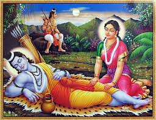
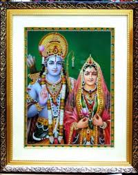
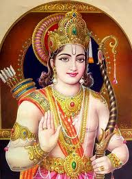

श्लोक :
शान्तं शाश्वतमप्रमेयमनघं निर्वाणशान्तिप्रदं ब्रह्माशम्भुफणीन्द्रसेव्यमनिशं वेदान्तवेद्यं विभुम्। रामाख्यं जगदीश्वरं सुरगुरुं मायामनुष्यं हरिं वन्देऽहं करुणाकरं रघुवरं भूपालचूडामणिम्॥1॥
शान्त, सनातन, अप्रमेय (प्रमाणों से परे), निष्पाप, मोक्षरूप परमशान्ति देने वाले, ब्रह्मा, शम्भु और शेषजी से निरंतर सेवित, वेदान्त के द्वारा जानने योग्य, सर्वव्यापक, देवताओं में सबसे बड़े, अपनी माया से मनुष्य रूप में साक्षात –सगुण, समस्त पापों को हरने वाले, करुणा-कृपा के स्रोत, रघुकुल में श्रेष्ठ तथा राजाओं के शिरोमणि रघुवर श्री राम –परम पिता परमेश्वर- जगदीश्वर की मैं वंदना करता हूँ॥1॥
नान्या स्पृहा रघुपते हृदयेऽस्मदीये सत्यं वदामि च भवानखिलान्तरात्मा। भक्तिं प्रयच्छ रघुपुंगव निर्भरां मे कामादिदोषरहितं कुरु मानसं च॥2॥
हे रघुनाथजी! मैं सत्य कहता हूँ और फिर आप तो सबके अंतरात्मा हैं (सब जानते ही हैं) कि मेरे हृदय में दूसरी कोई इच्छा नहीं है। हे रघुकुलश्रेष्ठ! मुझे अपनी परिपूर्ण भक्ति दीजिए और मेरे मन को काम आदि दोषों से रहित कीजिए॥2॥
अतुलितबलधामं हेमशैलाभदेहं दनुजवनकृशानुं ज्ञानिनामग्रगण्यम्। सकलगुणनिधानं वानराणामधीशं रघुपतिप्रियभक्तं वातजातं नमामि॥3॥
अतुल बल के धाम, सोने के पर्वत (सुमेरु) के समान कान्तियुक्त शरीर वाले, दैत्य रूपी वन (को ध्वंस करने) के लिए अग्नि रूप, ज्ञानियों में प्रथम, अग्रणी, समस्त, संपूर्ण गुणों के निधान, वानरों के स्वामी, श्री रघुनाथजी के प्रिय भक्त पवनपुत्र श्री हनुमान्जी को मैं प्रणाम करता हूँ॥3॥
चौपाई :
जामवंत के बचन सुहाए। सुनि हनुमंत हृदय अति भाए॥ तब लगि मोहि परिखेहु तुम्ह भाई। सहि दुख कंद मूल फल खाई॥1॥
जाम्बवान् के सुंदर वचन-सीख हनुमान्जी के हृदय को बहुत ही भाए। (और हनुमान जी बोले-) हे भाई! तुम लोग (किसी भी तरह) दुःख सहकर, कन्द-मूल-फल खाकर तब तक मेरी राह देखना...॥1॥
जब लगि आवौं सीतहि देखी। होइहि काजु मोहि हरष बिसेषी॥ यह कहि नाइ सबन्हि कहुँ माथा । चलेउ हरषि हियँ धरि रघुनाथा॥2॥
जब तक मैं सीताजी की सुध ले कर लौट न आऊँ। काम अवश्य होगा, क्योंकि मुझ में (इसके करने की) विशेष लग्न –हर्ष और प्रेरणा उत्पन्न हो रही है । यह कहकर सबको मस्तक नवाकर-नमन करके तथा हृदय में श्री रघुनाथजी को धारण कर हनुमान्जी हर्षित होकर चले॥2॥
सिंधु तीर एक भूधर सुंदर। कौतुक कूदि चढ़ेउ ता ऊपर॥ बार-बार रघुबीर सँभारी। तरकेउ पवनतनय बल भारी॥3॥
समुद्र के तीर पर एक सुंदर पर्वत है। हनुमान्जी बड़ी सहजता-चमत्कारिक रूप से कूदकर उसके ऊपर जा चढ़े और बार-बार श्री रघुवीर को (बल शक्ति प्रदान करने के लिये) पुकारा और इस प्रकार अत्यंत बलशाली हनुमानजी ने (श्रीराम प्रताप से ) उस पर्वत से बड़े वेग से उड़ान भरी! ॥3॥
जेहिं गिरि चरन देइ हनुमंता। चलेउ सो गा पाताल तुरंता॥ जिमि अमोघ रघुपति कर बाना। एही भाँति चलेउ हनुमाना॥4॥
जिस पर्वत पर हनुमान्जी ने पैर रखकर उड़ान भरी वह (हनुमान जी के शक्तिशाली वेग –दबाव को सहन ना कर सका और) तुरंत ही पाताल में धँस गया-समा गया। जिस वेग से श्री रघुनाथजी का अमोघ बाण चलता है, उसी वेग से हनुमान्जी उड़ चले। ॥4॥
जलनिधि रघुपति दूत बिचारी। तैं मैनाक होहि श्रम हारी॥5॥
समुद्र ने उन्हें श्री रघुनाथजी का दूत समझकर (सेवा भाव से) मैनाक पर्वत से कहा कि हे मैनाक! तू (कुछ क्षण के लिये )इनकी थकान दूर कर - इनका विश्राम स्थल बन, इन्हें विश्राम दे। ॥5॥
दोहा :
हनूमान तेहि परसा कर पुनि कीन्ह प्रनाम। राम काजु कीन्हें बिनु मोहि कहाँ बिश्राम॥1॥
हनुमान्जी ने उसे हाथ से ही छू भर दिया (सांकेतिक रूपसे सेवा स्वीकार कर उसका मान बढ़ाया), फिर प्रणाम करके कहा- हे भाई! राम कारज किए बिना मुझे विश्राम (चैन) कहाँ?॥1॥
चौपाई :
जात पवनसुत देवन्ह देखा। जानैं कहुँ बल बुद्धि बिसेषा॥ सुरसा नाम अहिन्ह कै माता। पठइन्हि आइ कही तेहिं बाता॥1॥
देवताओं ने पवनपुत्र हनुमान्जी को जाते हुए देखा। उनकी बल-बुद्धि को विशेष रूपसे जाँचने परखने के लिए उन्होंने सुरसा नामक सर्पों की माता को भेजा, उसने आकर हनुमान्जी से कहा -॥1॥
आजु सुरन्ह मोहि दीन्ह अहारा। सुनत बचन कह पवनकुमारा॥ राम काजु करि फिरि मैं आवौं। सीता कइ सुधि प्रभुहि सुनावौं॥2॥
आज देवताओं ने मुझे भोजन दिया है। यह वचन सुनकर पवनकुमार हनुमान्जी ने कहा- श्री रामजी का कार्य करके मैं लौट आऊँ और सीताजी की खबर प्रभु को सुना दूँ,॥2॥
तब तव बदन पैठिहउँ आई। सत्य कहउँ मोहि जान दे माई॥ कवनेहुँ जतन देइ नहिं जाना। ग्रससि न मोहि कहेउ हनुमाना॥3॥
तब मैं आकर तुम्हारे शरीर में (तुम्हारा भोजन बन) आ जाऊँगा। हे माता! मैं सत्य वचन कहता हूँ, इसलिये अभी (तो) मुझे जाने दे। जब किसी भी उपाय से उसने जाने नहीं दिया, तब हनुमान्जी ने कहा- तो फिर मुझे अभी ही क्यों नहीं ग्रस लेती!॥3॥
जोजन भरि तेहिं बदनु पसारा। कपि तनु कीन्ह दुगुन बिस्तारा ॥ सोरह जोजन मुख तेहिं ठयऊ। तुरत पवनसुत बत्तिस भयऊ॥4॥
उसने योजनभर (चार कोस बड़ा ) मुँह फैलाया। तब हनुमान्जी ने अपने शरीर को उससे भी दुगना बढ़ा लिया। उसने फिर सोलह योजन (चोड़ा) मुख किया। हनुमान्जी भी तुरंत ही बत्तीस योजन के (विशाल) हो गए॥4॥
जस जस सुरसा बदनु बढ़ावा। तासु दून कपि रूप देखावा॥ सत जोजन तेहिं आनन कीन्हा। अति लघु रूप पवनसुत लीन्हा॥5॥
जैसे-जैसे सुरसा मुख का विस्तार करती जाती है उसी अनुपात में हनुमान्जी अपना शरीर उससे दुगना दिखाते हैं। जब उसने सौ योजन (चार सौ कोस का) मुख किया तो हनुमान्जी ने (तुरन्त ही) बहुत ही सूक्ष्म रूप धारण कर लिया॥5॥
बदन पइठि पुनि बाहेर आवा। मागा बिदा ताहि सिरु नावा॥ मोहि सुरन्ह जेहि लागि पठावा। बुधि बल मरमु तोर मैं पावा॥6॥
और उसके (अति विशाल खुले हुये) मुख के अन्दर जा कर (तुरंत) बाहर निकल आए और उसे सिर नवाकर विदा माँगने लगे। (तब उसने कहा-) मैंने तुम्हारे बुद्धि-बल का भेद पा लिया, इसी की थाह लेने के लिए देवताओं ने मुझे भेजा था ॥6॥
दोहा :
राम काजु सबु करिहहु तुम्ह बल बुद्धि निधान। आसिष देइ गई सो हरषि चलेउ हनुमान॥2॥
तुम श्री रामचंद्रजी का सब कार्य करोगे, क्योंकि तुम बल-बुद्धि के भंडार हो। यह आशीर्वाद देकर वह चली गई, तब हनुमान्जी हर्षित होकर आगे चले॥2॥
चौपाई :
निसिचरि एक सिंधु महुँ रहई। करि माया नभु के खग गहई॥ जीव जंतु जे गगन उड़ाहीं। जल बिलोकि तिन्ह कै परिछाहीं॥1॥
समुद्र में एक राक्षसी रहती थी। आकाश में जो जीव-जंतु उड़ा करते थे, वह जल में उनकी परछाईं देखकर ही माया-छल करके आकाश में उड़ते हुए पक्षियों को पकड़ लेती थी।1॥
गहइ छाहँ सक सो न उड़ाई। एहि बिधि सदा गगनचर खाई॥ सोइ छल हनूमान् कहँ कीन्हा। तासु कपटु कपि तुरतहिं चीन्हा॥2॥
उस परछाईं को पकड़ लेती थी, जिससे वे उड़ नहीं सकते थे (और जल में गिर पड़ते थे) इस प्रकार वह सदा आकाश में उड़ने वाले जीवों को खाया करती थी। उसने वही छल हनुमान्जी से भी किया। हनुमान्जी ने तुरंत ही उसका कपट पहचान लिया॥2॥
ताहि मारि मारुतसुत बीरा। बारिधि पार गयउ मतिधीरा॥ तहाँ जाइ देखी बन सोभा। गुंजत चंचरीक मधु लोभा॥3॥
धीरबुद्धि वीर श्री हनुमान्जी उसको मारकर समुद्र के पार (उतर) गए। वहाँ जाकर उन्होंने वन की शोभा देखी। मधु (पुष्प रस) के लोभ से भौंरे गुंजार कर रहे थे॥3॥
नाना तरु फल फूल सुहाए। खग मृग बृंद देखि मन भाए॥ सैल बिसाल देखि एक आगें। ता पर धाइ चढ़ेउ भय त्यागें॥4॥
अनेकों प्रकार के वृक्ष फल-फूल से शोभित हैं। पक्षी और पशुओं के समूह को देखकर तो वे मन में (बहुत ही) प्रसन्न हुए। अपने सामने एक विशाल पर्वत देखा और हनुमान्जी भय त्यागकर उस पर गति से दौड़कर जा चढ़े॥4॥
उमा न कछु कपि कै अधिकाई। प्रभु प्रताप जो कालहि खाई॥ गिरि पर चढ़ि लंका तेहिं देखी। कहि न जाइ अति दुर्ग बिसेषी॥5॥
(शिवजी कहते हैं-) हे उमा! इसमें वानर हनुमान् की कुछ बड़ाई नहीं है। यह सब तो प्रभु का ही प्रताप है, जो काल को भी खा जाता है। पर्वत पर चढ़कर उन्होंने लंका देखी। बहुत ही बड़ाऔर विशेष ही किला है, जिसका वर्णन करना कठिन है॥5॥
अति उतंग जलनिधि चहुँ पासा। कनक कोट कर परम प्रकासा॥6॥
वह (दुर्ग) अत्यंत ऊँचा है, उसके चारों ओर समुद्र है। (चकाचौंध करते) सोने के परकोटे परम प्रकाश फैला रहे हैं ॥6॥
छंद :
कनक कोटि बिचित्र मनि कृत सुंदरायतना घना। चउहट्ट हट्ट सुबट्ट बीथीं चारु पुर बहु बिधि बना॥ गज बाजि खच्चर निकर पदचर रथ बरूथन्हि को गनै। बहुरूप निसिचर जूथ अतिबल सेन बरनत नहिं बनै॥1॥
विचित्र मणियों से जड़ा हुआ सोने का परकोटा है, उसके अंदर बहुत से सुंदर-सुंदर घर हैं। चौराहे, बाजार, सुंदर मार्ग और गलियाँ हैं, सुंदर नगर बहुत प्रकार से सजा हुआ है। हाथी, घोड़े, खच्चरों के समूह तथा पैदल और रथों के समूहों को कौन गिन सकता है! अनेक रूपों के राक्षसों के दल हैं, उनकी अत्यंत बलवती सेना का वर्णन किये नहीं बनता ॥1॥
बन बाग उपबन बाटिका सर कूप बापीं सोहहीं। नर नाग सुर गंधर्ब कन्या रूप मुनि मन मोहहीं॥ कहुँ माल देह बिसाल सैल समान अतिबल गर्जहीं। नाना अखारेन्ह भिरहिं बहुबिधि एक एकन्ह तर्जहीं॥2॥
वन, बाग, उपवन (बगीचे), फुलवाड़ी, तालाब, कुएँ और बावड़ियाँ सुशोभित हैं। मनुष्य, नाग, देवताओं और गंधर्वों की कन्याएँ अपने सौंदर्य से मुनियों के भी मन को मोह रही हैं। कहीं पर्वत के समान विशाल शरीर वाले बड़े ही बलवान् मल्ल (पहलवान) ललकार रहे हैं। वे अनेकों अखाड़ों में बहुत प्रकार से दंगल में भिड़ने के लिये एक-दूसरे को ललकारते हैं॥2॥
करि जतन भट कोटिन्ह बिकट तन नगर चहुँ दिसि रच्छहीं। कहुँ महिष मानुष धेनु खर अज खल निसाचर भच्छहीं॥ एहि लागि तुलसीदास इन्ह की कथा कछु एक है कही। रघुबीर सर तीरथ सरीरन्हि त्यागि गति पैहहिं सही॥3॥
भयंकर शरीर वाले करोड़ों यत्नशील और क्रियाशील योद्धा (बड़ी सावधानी से) नगर की चारों दिशाओं में (सब ओर से) रखवाली करते हैं। कहीं दुष्ट राक्षस भैंसों, मनुष्यों, गायों, गदहों और बकरों को खा रहे हैं। तुलसीदास ने इनकी कुछ थोड़ी सी कथा इसीलिए कही है कि ये (इतने पापी होते हुये भी अब कितने भाग्यशाली हो गए हैं जो) निश्चय ही श्री रामचंद्रजी के बाण रूपी तीर्थ में शरीरों को त्यागकर परमगति पावेंगे॥3॥
दोहा-
पुर रखवारे देखि बहु कपि मन कीन्ह बिचार। अति लघु रूप धरों निसि नगर करौं पइसार॥3॥
नगर के बहुसंख्यक रखवालों को देखकर हनुमान्जी ने मन में विचार किया कि अत्यंत छोटा रूप धरूँ और रात के समय नगर में प्रवेश करूँ॥3॥
चौपाई :
मसक समान रूप कपि धरी। लंकहि चलेउ सुमिरि नरहरी॥ नाम लंकिनी एक निसिचरी। सो कह चलेसि मोहि निंदरी॥1॥
हनुमान्जी मच्छर के समान (छोटा सा) रूप धारण कर नर रूप से लीला करने वाले भगवान् श्री रामचंद्रजी का सुमरण करके लंका (के दुर्ग को भेदने) चले। (लंका के द्वार पर) लंकिनी नाम की एक राक्षसी (बड़ी सतर्क)रहती है। उसने ललकार कर कहा, मेरा निरादर करके (मेरी अनदेखी करके ) कहाँ चला जा रहा है?॥1॥
जानेहि नहीं मरमु सठ मोरा। मोर अहार जहाँ लगि चोरा॥ मुठिका एक महा कपि हनी। रुधिर बमत धरनीं ढनमनी॥2॥
हे मूर्ख! तूने मेरा भेद –प्राक्रम नहीं जाना जहाँ तक (जितने) चोर हैं, वे सब मेरे आहार हैं। महाकपि हनुमान्जी ने उसे एक घूँसा मारा, जिससे वह खून की उलटी करती, ल़ुढकती हुई पृथ्वी पर गिर पड़ी॥2॥
पुनि संभारि उठी सो लंका। जोरि पानि कर बिनय ससंका॥ जब रावनहि ब्रह्म बर दीन्हा। चलत बिरंच कहा मोहि चीन्हा॥3॥
वह लंकिनी फिर अपने को संभालकर उठी और डर के मारे हाथ जोड़कर विनती करने लगी। (वह बोली-) रावण को जब ब्रह्माजी ने वर दिया था, तब चलते समय उन्होंने मुझे राक्षसों के विनाश की पहचान बता दी थी कि-॥3॥

बिकल होसि तैं कपि कें मारे। तब जानेसु निसिचर संघारे॥ तात मोर अति पुन्य बहूता। देखेउँ नयन राम कर दूता॥4॥
जब तू बंदर के मारने से अधमरी हो जाए, तड़फने लगे तब तू राक्षसों का संहार हुआ जान लेना। हे तात! मेरे बड़े भारी पुण्य हैं, जो मैं श्री राम दूत (आप) को नेत्रों से (साक्षात) देख रही हूँ ॥4॥
दोहा :
तात स्वर्ग अपबर्ग सुख धरिअ तुला एक अंग। तूल न ताहि सकल मिलि जो सुख लव सतसंग॥4॥
हे तात! अगर स्वर्ग और मोक्ष के सब सुखों को (नाप तोल के लिये) तराजू के एक पलड़े में रख दिया जाए, तो वे सब मिलकर भी (दूसरे पलड़े पर रखे हुए) उस सुख –लाभ की बराबरी –तुलना नहीं कर सकते जो क्षण मात्र के सत्तसंग से प्राप्त होता है। (जो परम सत्तसंग का परम सुख राम सेवक संग राम नाम लेने से अब मुझे प्राप्त हुआ है।) ।॥4॥
चौपाई :
प्रबिसि नगर कीजे सब काजा। हृदयँ राखि कोसलपुर राजा॥ गरल सुधा रिपु करहिं मिताई। गोपद सिंधु अनल सितलाई॥1॥
कौशलनाथ श्री रघुनाथजी को हृदय में धारे नगर में प्रवेश करके सब (राम) कारज कीजिए।
गरुड़ सुमेरु रेनु सम ताही। राम कृपा करि चितवा जाही॥ अति लघु रूप धरेउ हनुमाना। पैठा नगर सुमिरि भगवाना॥2॥
जिस किसी को भी अगर श्री रामचंद्रजी ने बस एक बार कृपा करके देख लिया हो तो उसके लिए तो फिर विष भी अमृत हो जाता है, शत्रु भी उससे मित्रता के लिये तरसते हैं, समुद्र (सिमट कर) गाय के खुर जितना हो जाता है, अग्नि भी शीतलता बरसाती है .... ॥1॥
और हे गरुड़जी! (श्रीराम जिस के हृदय में कृपा बरसाते हैं तो) सुमेरु पर्वत तक उसके लिए रज के समान हो जाता है। अब हनुमान्जी ने बहुत ही छोटा रूप धारण किया और भगवान श्री राम का सुमरण करके लंका नगर में प्रवेश किया॥2॥
मंदिर मंदिर प्रति करि सोधा। देखे जहँ तहँ अगनित जोधा॥ गयउ दसानन मंदिर माहीं। अति बिचित्र कहि जात सो नाहीं॥3॥
उन्होंने एक-एक (प्रत्येक) महल की खोज की। जहाँ-तहाँ असंख्य योद्धा देखे। फिर वे रावण के महल में गए। वह अत्यंत विचित्र था, जिसका वर्णन नहीं हो सकता॥3॥
सयन किएँ देखा कपि तेही। मंदिर महुँ न दीखि बैदेही॥ भवन एक पुनि दीख सुहावा। हरि मंदिर तहँ भिन्न बनावा॥4॥
हनुमान्जी ने उस (रावण) को सोये हुये देखा, परन्तु किसी महल में जानकीजी दिखाई नहीं दीं। फिर एक सुंदर महल दिखाई दिया। जहाँ सब (घरों-महलों से) अलग ही श्री राम का मंदिर बना हुआ है ॥4॥
दोहा :
रामायुध अंकित गृह सोभा बरनि न जाइ। नव तुलसिका बृंद तहँ देखि हरष कपिराई॥5॥
वह महल श्री रामजी के आयुध (धनुष-बाण) के चिह्नों से अंकित शोभायमान है, उसकी शोभा वर्णन नहीं की जा सकती। वहाँ हरे-भरे तुलसी के वृक्ष-समूहों को देखकर कपिराज श्री हनुमान्जी हर्षित हुए- खिल उठे! ॥5॥
चौपाई :
लंका निसिचर निकर निवासा। इहाँ कहाँ सज्जन कर बासा॥ मन महुँ तरक करैं कपि लागा। तेहीं समय बिभीषनु जागा॥1॥
लंका तो राक्षसों के समूह का निवास स्थान है। यहाँ सज्जन (साधु पुरुष) का निवास कैसे? इस प्रकार हनुमान्जी मन में तर्क करने लगे! और उसी समय विभीषणजी जागते हुये ... ॥1॥
राम राम तेहिं सुमिरन कीन्हा। हृदयँ हरष कपि सज्जन चीन्हा॥ एहि सन सठि करिहउँ पहिचानी। साधु ते होइ न कारज हानी॥2॥
उन्होंने राम नाम का उच्चारण किया। (रामनाम का उच्चारण सुन) हनुमान्जी ने उन्हें सज्जन जाना और हृदय में हर्षित हुए। (हनुमान्जी ने विचार किया कि) इनसे कैसे भी करके (हर हाल में) परिचय करूँगा, क्योंकि साधु से (मिलने से) तो किसी कार्य की हानि होती नहीं। ॥2॥
बिप्र रूप धरि बचन सुनाए। सुनत बिभीषन उठि तहँ आए॥ करि प्रनाम पूँछी कुसलाई। बिप्र कहहु निज कथा बुझाई॥3॥
ब्राह्मण का रूप धरकर हनुमान्जी ने उनको मधुर वचन सुनाये । सुनते ही विभीषणजी उठकर वहाँ आए। प्रणाम करके कुशल पूछी (और कहा कि) हे ब्राह्मणदेव! अपनी कथा –अपना मनोरथ मुझे कहिए॥3॥
की तुम्ह हरि दासन्ह महँ कोई। मोरें हृदय प्रीति अति होई॥ की तुम्ह रामु दीन अनुरागी। आयहु मोहि करन बड़भागी॥4॥
क्या आप हरिभक्तों में से कोई हैं? क्योंकि आपको देखकर मेरे हृदय में अत्यंत प्रेम उमड़ रहा है।
मुझे बड़भागी बनाने-मेरे भाग्य जगाने यों (मेरे द्वार ही चले) आए हैं, कहीं आप दीनों से प्रेम करने वाले स्वयं श्री रामजी ही तो नहीं हैं! ॥4॥
दोहा :
तब हनुमंत कही सब राम कथा निज नाम। सुनत जुगल तन पुलक मन मगन सुमिरि गुन ग्राम॥6॥
तब हनुमान्जी ने श्री रामचंद्रजी की सारी कथा कहकर अपना नाम बताया। सुनते ही दोनों के शरीर पुलकित-गदगद हो गए और श्री रामजी के अनंत गुणों का सुमरण करके दोनों के मन (प्रेम और आनंद में) मग्न-मस्त हो गए॥6॥
चौपाई :
सुनहु पवनसुत रहनि हमारी। जिमि दसनन्हि महुँ जीभ बिचारी॥ तात कबहुँ मोहि जानि अनाथा। करिहहिं कृपा भानुकुल नाथा॥1॥
(विभीषणजी ने कहा-) हे पवनपुत्र! लंका में मेरी रहनी सुनो। मैं यहाँ (दुष्टों-पापियों में) वैसे ही रहता हूँ जैसे दाँतों के बीच में बेचारी जीभ। हे तात! मुझे अनाथ जानकर सूर्यकुल के नाथ श्री रामचंद्रजी क्या कभी मुझ पर भी कृपा करेंगे?॥1॥
तामस तनु कछु साधन नाहीं। प्रीत न पद सरोज मन माहीं॥ अब मोहि भा भरोस हनुमंता। बिनु हरिकृपा मिलहिं नहिं संता॥2॥
मेरा तामसी (राक्षस) शरीर होने से किसी प्रकार का (भजन-सत्तसंग रूपी) साधन और प्रयत्न्न तो कुछ बन नहीं पाता और न ही मन में श्री रामचंद्रजी के चरणकमलों में प्रेम ही उपजता है, परन्तु हे हनुमान् जी ! अब तो मुझे भरोसा हो ही गया कि श्री रामजी की मुझ पर कृपा तो है, क्योंकि बिना हरि कृपा के तो कोई संत मिल ही नहीं सकता। ॥2॥
जौं रघुबीर अनुग्रह कीन्हा। तौ तुम्ह मोहि दरसु हठि दीन्हा॥ सुनहु बिभीषन प्रभु कै रीती। करहिं सदा सेवक पर प्रीति॥3॥
जब श्री रघुवीर की कृपा हुई है, तभी तो आपने अपनी ओर से पहल करके मुझे दर्शन दिए हैं। (हनुमान्जी ने कहा-) हे विभीषणजी! सुनिए, प्रभु की तो यही रीति है कि वे सेवक पर सदा ही प्रेम-प्रीति बनाए रखते हैं। ॥3॥
कहहु कवन मैं परम कुलीना। कपि चंचल सबहीं बिधि हीना॥ प्रात लेइ जो नाम हमारा। तेहि दिन ताहि न मिलै अहारा॥4॥
भला कहिए तो, मैं ही कौनसा बड़ा कुलीन हूँ? (कैसे ऊच्च कुलका हूँ?) (जाति का) चंचल-नटखट वानर हूँ और सब प्रकार से नीच हूँ। प्रातःकाल जो हम लोगों (बंदरों) का (भूल के) नाम भी ले ले तो उस दिन तो उसे भोजन न मिले॥4॥
दोहा :
अस मैं अधम सखा सुनु मोहू पर रघुबीर। कीन्हीं कृपा सुमिरि गुन भरे बिलोचन नीर॥7॥
हे सखा! सुनिए, मैं ऐसा अधम हूँ, फिर भी श्री रामचंद्रजी ने तो मुझ पर कितनी असीम कृपा की है! कृपानिधान के गुणों का स्मरण करके हनुमान्जी के दोनों नेत्रों में (प्रेमाश्रुओं का) जल भर आया॥7॥
चौपाई :
जानतहूँ अस स्वामि बिसारी। फिरहिं ते काहे न होहिं दुखारी॥ एहि बिधि कहत राम गुन ग्रामा। पावा अनिर्बाच्य बिश्रामा॥1॥
जो (हरि महिमा) जानते हुए भी, ऐसे स्वामी (श्री रघुनाथजी) को भुलाकर (विषयों के पीछे) भटकते फिरते हैं, वे दुःखी क्यों न हों? इस प्रकार श्री रामजी के गुण समूहों की महिमा कहते हुए उन्होंने असीम -अवर्णनीय (परम) सुख-शांति पाई। ॥1॥
पुनि सब कथा बिभीषन कही। जेहि बिधि जनकसुता तहँ रही॥ तब हनुमंत कहा सुनु भ्राता। देखी चहउँ जानकी माता॥2॥
फिर विभीषणजी ने, श्री जानकीजी जिस प्रकार वहाँ (लंका में) रहती हैं, वह सब हाल कह सुनाया। तब हनुमान्जी ने कहा- हे भ्राता! सुनो, मैं जानकी माता के दर्शन करना चाहता हूँ ! ॥2॥
जुगुति बिभीषन सकल सुनाई। चलेउ पवन सुत बिदा कराई॥ करि सोइ रूप गयउ पुनि तहवाँ। बन असोक सीता रह जहवाँ॥3॥
तब विभीषणजी ने सब उपाय कहे। तब हनुमान्जी ने विभीषण जी से विदा ले कर चले । फिर वही (पहले का मच्छर सरीखा) रूप धरकर वहाँ गए, अशोक वन में जहाँ सीताजी रहती हैं ॥3॥

देखि मनहि महुँ कीन्ह प्रनामा। बैठेहिं बीति जात निसि जामा॥ कृस तनु सीस जटा एक बेनी। जपति हृदयँ रघुपति गुन श्रेनी॥4॥
सीताजी को देखकर हनुमान्जी ने उन्हें मन ही मन सादर प्रणाम किया। रात्रि के चारों पहर वो यूं बैठे बैठे ही बीता देती हैं। शरीर एकदम दुबला हो गया है, सिर पर जटाओं की एक वेणी (लट) है। हृदय में श्री रघुनाथजी के गुण-महिमा का ही सदैव जाप करती रहती हैं॥4॥
दोहा :
निज पद नयन दिएँ मन राम पद कमल लीन। परम दुखी भा पवनसुत देखि जानकी दीन॥8॥
श्री जानकीजी नेत्रों को अपने चरणों में लगाए हुए हैं और मन श्री रामजी के चरण कमलों में लीन है। जानकीजी को दीन (दुःखी) देखकर पवनपुत्र हनुमान्जी बहुत ही दुःखी हुए॥8॥
चौपाई :
तरु पल्लव महँ रहा लुकाई। करइ बिचार करौं का भाई॥ तेहि अवसर रावनु तहँ आवा। संग नारि बहु किएँ बनावा॥1॥
हनुमान्जी वृक्ष के पत्तों में लुके- छिपे विचार कर (ही) रहे हैं कि हे भाई! क्या करूँ (इनसे मिलना कैसे हो, जिससे इनका दुःख दूर करूँ)? उसी समय बहुत सी स्त्रियों को साथ लिए सज-धजकर रावण वहाँ आया॥1॥
बहु बिधि खल सीतहि समुझावा। साम दान भय भेद देखावा॥ कह रावनु सुनु सुमुखि सयानी। मंदोदरी आदि सब रानी॥2॥
उस दुष्ट ने सीताजी को बहुत प्रकार से समझाया। साम, दाम, भय और भेद दिखलाया। रावण ने कहा- हे सुमुखि! हे सयानी! सुनो! मंदोदरी आदि सब रानियों को-... ॥2॥
तव अनुचरीं करउँ पन मोरा। एक बार बिलोकु मम ओरा॥ तृन धरि ओट कहति बैदेही। सुमिरि अवधपति परम सनेही॥3॥
मैं तुम्हारी दासी बना दूँगा, यह मेरा प्रण है। तुम एक बार मेरी ओर देखो तो सही! अपने परम स्नेही कोसलाधीश श्री रामचंद्रजी का सुमरण करके जानकीजी तिनके की ओट - (मर्यादा की लकीर) लगा करके कहने लगीं-॥3॥
सुनु दसमुख खद्योत प्रकासा। कबहुँ कि नलिनी करइ बिकासा॥ अस मन समुझु कहति जानकी। खल सुधि नहिं रघुबीर बान की॥4॥
हे दशमुख! सुन, जुगनू के प्रकाश से कभी कमलिनी खिल सकती है क्या ? (तूँ जुगनू और मेरे स्वामी श्रीराम हजारों सूर्य का प्रकाश) जानकीजी फिर कहती हैं- तू ऐसा ही अपने मन में समझ ले। रे दुष्ट! तूँ श्री रघुवीर के प्रण, (निश्चय और सौगन्ध) से अवगत नहीं है॥4॥
सठ सूनें हरि आनेहि मोही। अधम निलज्ज लाज नहिं तोही॥5॥
रे पापी! तू मुझे सूने में (ही तो) हर लाया है। रे अधम! निर्लज्ज! तुझे लज्जा भी नहीं आई ?॥5॥
दोहा :
आपुहि सुनि खद्योत सम रामहि भानु समान। परुष बचन सुनि काढ़ि असि बोला अति खिसिआन॥9॥
अपने को जुगनू के समान और रामचंद्रजी को सूर्य के समान सुनकर और सीताजी के कठोर (सत्त) वचनों को सुनकर तलवार खींच कर रावण बड़े गुस्से में आकर बोला-॥9॥
चौपाई :
सीता तैं मम कृत अपमाना। कटिहउँ तव सिर कठिन कृपाना॥ नाहिं त सपदि मानु मम बानी। सुमुखि होति न त जीवन हानी॥1॥
सीता! तूने मेरा अपनाम किया है। अब भी या तो जल्दी से मेरी बात मान ले। नहीं तो मैं तेरा सिर इस तीक्ष्ण कृपाण से काट डालूँगा। और हे सुमुखि! तुझे अपने जीवन से हाथ धोना पड़ सकता है ॥1॥
स्याम सरोज दाम सम सुंदर। प्रभु भुज करि कर सम दसकंधर॥ सो भुज कंठ कि तव असि घोरा। सुनु सठ अस प्रवान पन मोरा॥2॥
(सीताजी ने कहा-) हे दशग्रीव! प्रभु की भुजा जो श्याम कमल की माला के समान सुंदर और हाथी की सूँड के समान ( विशाल और बलशाली) है, या तो वह भुजा ही मेरे कंठ में सज्जेगी या तेरी भयानक तलवार (की धार ही सहेगी)। रे शठ! सुन, यही मेरी सत्य शपथ (और अन्तिम निश्चय और) प्रण है॥2॥
चंद्रहास हरु मम परितापं। रघुपति बिरह अनल संजातं॥ सीतल निसित बहसि बर धारा। कह सीता हरु मम दुख भारा॥3॥
सीताजी कहती हैं- हे चंद्रहास (रावण की तलवार)! श्री रघुनाथजी के विरह की अग्नि से उत्पन्न मेरी बड़ी भारी पीड़ा-जलन को तू हर ले। हे तलवार! (हरि विरह की जलन को मेरे लहू की ) शीतल, तीव्र और श्रेष्ठ धारा बहा कर (शांत कर) दे, (इस प्रकार) तू ही मेरे दुःख के बोझ को हर ले!॥3॥
चौपाई :
सुनत बचन पुनि मारन धावा। मयतनयाँ कहि नीति बुझावा॥ कहेसि सकल निसिचरिन्ह बोलाई। सीतहि बहु बिधि त्रासहु जाई॥4॥
सीताजी के ये वचन सुनते ही वह फिर (सीता जी को) मारने दौड़ा। तब मय दानव की पुत्री मन्दोदरी ने नीति और मर्यादा कहकर उसे समझाया। तब रावण ने सब दासियों को बुलाकर कहा कि जाकर सीता को बहुत प्रकार से भय दिखलाओ, अत्याचार करो। ॥4॥
मास दिवस महुँ कहा न माना। तौ मैं मारबि काढ़ि कृपाना॥5॥
यदि महीने भर में इसने मेरा कहा न माना तो मैं इसे तलवार निकालकर मार डालूँगा॥5॥
दोहा :
भवन गयउ दसकंधर इहाँ पिसाचिनि बृंद। सीतहि त्रास देखावहिं धरहिं रूप बहु मंद॥10॥
(यों कहकर) रावण अपने महल में चला गया। यहाँ राक्षसियों के समूह बहुत से बुरे और डरावने रूप धर-धर कर सीताजी को आंतंकित (उनपर अत्याचार) करने के लिये दिखलाने लगे॥10॥
चौपाई :
त्रिजटा नाम राच्छसी एका। राम चरन रति निपुन बिबेका॥ सबन्हौ बोलि सुनाएसि सपना। सीतहि सेइ करहु हित अपना॥1॥
उनमें एक त्रिजटा नाम की राक्षसी थी। उसकी श्री रामचंद्रजी के चरणों में प्रीति थी और वह विवेक (ज्ञान) में निपुण थी। उसने सब को बुलाकर अपना स्वप्न सुनाया और कहा- सीताजी की सेवा करने से ही अपना हित –कल्याण होगा !॥1॥
सपनें बानर लंका जारी। जातुधान सेना सब मारी॥ खर आरूढ़ नगन दससीसा। मुंडित सिर खंडित भुज बीसा॥2॥
मैंने स्वप्न में (देखा कि) एक बंदर ने लंका जला दी है । राक्षसों की सारी सेना मारी जा चुकी है । रावण नंगा है और गधे पर चढ़ा है। उसके सिर मुँडे हुए हैं, बीसों भुजाएँ कटी हुई हैं॥2॥
एहि बिधि सो दच्छिन दिसि जाई। लंका मनहुँ बिभीषन पाई॥ नगर फिरी रघुबीर दोहाई। तब प्रभु सीता बोलि पठाई॥3॥
इस प्रकार से वह दक्षिण (यमपुरी की) दिशा को जा रहा है और (सत्य) मानो लंका विभीषण ने पा ली है। नगर में श्री रामचंद्रजी का डंका बज रहा है, उनकी जय जयकार हो रही है। तब प्रभु ने सीताजी को लिवा लाने को भेजा है ॥3॥
यह सपना मैं कहउँ पुकारी। होइहि सत्य गएँ दिन चारी॥ तासु बचन सुनि ते सब डरीं। जनकसुता के चरनन्हि परीं॥4॥
मैं पुकार-पुकार कर (निश्चय के साथ) कहती हूँ कि यह स्वप्न दो-चार ही दिनों में सत्य होने वाला है । उसके वचन सुनकर वे सब राक्षसियाँ डर गईं और जानकीजी के चरणों पर गिर पड़ीं॥4॥
दोहा :
जहँ तहँ गईं सकल तब सीता कर मन सोच। मास दिवस बीतें मोहि मारिहि निसिचर पोच॥11॥
तब (इसके बाद) वे सब इधर-उधर (सिताजी को अकेला छोड़ ) चली गईं। सीताजी मन में सोच करने लगीं कि एक महीना बीत जाने पर नीच राक्षस रावण मुझे मार डालेगा। ॥11॥
चौपाई :
त्रिजटा सन बोलीं कर जोरी। मातु बिपति संगिनि तैं मोरी॥ तजौं देह करु बेगि उपाई। दुसह बिरहु अब नहिं सहि जाई॥1॥
सीताजी हाथ जोड़कर त्रिजटा से बोलीं- हे माता! तू मेरी विपत्ति की संगिनी है, दु:ख की साथी है । जल्दी कोई ऐसा उपाय कर जिससे मैं शरीर छोड़ सकूँ। विरह असह्म हो चला है, अब और सहन नहीं होता.... ॥1॥
आनि काठ रचु चिता बनाई। मातु अनल पुनि देहि लगाई॥ सत्य करहि मम प्रीति सयानी। सुनै को श्रवन सूल सम बानी॥2॥
लकड़ी लाकर मेरी चिता तैयार कर दे। हे माता! फिर उसमें आग लगा दे। हे सयानी! ( राम बिरह में मेरे प्राण त्यागने में मेरी सहायता करके ) तू (राम से) मेरी प्रीति की लाज रख दे, उसको को सत्य प्रमाणित कर दे। रावण की शूल के समान घाव करने वाली वाणी कानों से कैसे सुनूँ ?॥2॥
सुनत बचन पद गहि समुझाएसि। प्रभु प्रताप बल सुजसु सुनाएसि॥ निसि न अनल मिल सुनु सुकुमारी। अस कहि सो निज भवन सिधारी।3॥
सीताजी के वचन सुनकर त्रिजटा ने चरण पकड़कर उन्हें समझाया और प्रभु का प्रताप, बल और सुयश गाया । (उसने कहा-) हे सुकुमारी! सुनो अब रात्रि के समय आग नहीं मिलेगी। ऐसा कहकर वह अपने घर चली गई॥3॥
कह सीता बिधि भा प्रतिकूला। मिलिहि न पावक मिटिहि न सूला॥ देखिअत प्रगट गगन अंगारा। अवनि न आवत एकउ तारा॥4॥
सीताजी (मन ही मन) कहने लगीं- (क्या करूँ) विधाता ही विपरीत हो गया। आग मिलती नहीं और (मरे बिना) पीड़ा मिटती नहीं । आकाश में अंगारे (तारों में ) प्रकट दिखाई दे रहे हैं, पर पृथ्वी पर एक भी तारा (क्यूँ) नहीं आता॥4॥
पावकमय ससि स्रवत न आगी। मानहुँ मोहि जानि हतभागी॥ सुनहि बिनय मम बिटप असोका। सत्य नाम करु हरु मम सोका॥5॥
चंद्रमा अग्निमय है, किंतु वह भी मानो मुझे अभागिनी जानकर आग नहीं बरसाता।(मेरा भाग्य तो आग में जल मरने का भी नहीं।) हे अशोक वृक्ष! मेरी विनती सुन। मेरा शोक हर ले और अपना (अशोक) नाम सत्य करले ॥5॥
नूतन किसलय अनल समाना। देहि अगिनि जनि करहि निदाना॥ देखि परम बिरहाकुल सीता। सो छन कपिहि कलप सम बीता॥6॥
तेरे नए-नए कोमल पत्ते अग्नि के समान हैं। अग्नि दे के, विरह रोग से मुक्त कर दे। सीताजी को विरह से परम व्याकुल देखा वह क्षण हनुमान्जी को कल्प के समान बीता॥6॥
सोरठा :
कपि करि हृदयँ बिचार दीन्हि मुद्रिका डारि तब। जनु असोक अंगार दीन्ह हरषि उठि कर गहेउ॥12॥
तब हनुमान्जी ने हदय में विचार कर (सीताजी के सामने) अँगूठी डाल दी, मानो अशोक ने अंगारा दे दिया हो। (यह समझकर) सीताजी ने हर्षित हुई लपक कर उसे हाथ में ले लिया॥12॥
चौपाई :
तब देखी मुद्रिका मनोहर। राम नाम अंकित अति सुंदर॥ चकित चितव मुदरी पहिचानी। हरष बिषाद हृदयँ अकुलानी॥1॥
तब उन्होंने राम-नाम से अंकित अत्यंत सुंदर एवं मनोहर अँगूठी देखी। अँगूठी को पहचानकर सीताजी आश्चर्यचकित होकर उसे देखने लगीं और हर्ष तथा विषाद से हृदय में (अनूठी) हलचल पैदा हो गई ॥1॥
जीति को सकइ अजय रघुराई। माया तें असि रचि नहिं जाई॥ सीता मन बिचार कर नाना। मधुर बचन बोलेउ हनुमाना॥2॥
(वे सोचने लगीं-) श्री रघुनाथजी तो सर्वथा अजेय हैं, उन्हें कौन जीत सकता है? और माया से ऐसी (अनूठी -दिव्य) अँगूठी बनाई नहीं जा सकती। सीताजी मन में अनेक प्रकार के विचार कर रही हैं । तभी हनुमान्जी मधुर-सुखदायी वचन बोले-॥2॥
रामचंद्र गुन बरनैं लागा। सुनतहिं सीता कर दुख भागा॥ लागीं सुनैं श्रवन मन लाई। आदिहु तें सब कथा सुनाई॥3॥
वे श्री रामचंद्रजी की महिमा का गुणगान करने लगे, (जिनके) सुनते ही सीताजी का दुःख दूर हो गया। हनुमान्जी ने प्रारम्भ से लेकर अब तक की सारी कथा गाई और सिताजी ध्यानमग्न-चाव से मन लगाकर राम गुणगान सुनने लगीं। ॥3॥
श्रवनामृत जेहिं कथा सुहाई। कही सो प्रगट होति किन भाई॥ तब हनुमंत निकट चलि गयऊ। फिरि बैठीं मन बिसमय भयऊ ॥4॥
(सीताजी बोलीं-) सुख देती, कानों में अमृत घोलती यह सुंदर कथा गाने वाले, हे भाई! तुम प्रकट क्यों नहीं होते ? तब हनुमान्जी सीता जी के पास चले आये । उन्हें देखते ही सिताजी के मन में आश्चर्य हुआ और वे (हनुमानजी से ) मुँह फेर कर बैठ गईं? ॥4॥
राम दूत मैं मातु जानकी। सत्य सपथ करुनानिधान की॥ यह मुद्रिका मातु मैं आनी। दीन्हि राम तुम्ह कहँ सहिदानी॥5॥
(हनुमान्जी ने कहा-) हे माता जानकी! करुणानिधान की सच्ची शपथ करता हूँ, मैं श्री रामजी का दूत हूँ। हे माता! यह अँगूठी मैं ही लाया हूँ। यह निशानी श्री रामजी ने मुझे आपके लिए दी है॥5॥
नर बानरहि संग कहु कैसें। कही कथा भइ संगति जैसें॥6॥
(सीताजी ने पूछा-) नर और वानर का मेल ! भला कैसे? तब हनुमानजी ने जिस प्रकार उनका श्रीराम संग मिलन हुआ , वह सब कथा कही॥6॥
दोहा :
कपि के बचन सप्रेम सुनि उपजा मन बिस्वास जाना मन क्रम बचन यह कृपासिंधु कर दास॥13॥
हनुमान्जी के प्रेम-स्नेह से सने वचन सुनकर सीताजी के मन में विश्वास उत्पन्न हो गया, उन्होंने जान लिया कि यह मन, वचन और कर्म से कृपासागर श्री रघुनाथजी का दास ही है॥13॥
चौपाई :
हरिजन जानि प्रीति अति गाढ़ी। सजल नयन पुलकावलि बाढ़ी॥ बूड़त बिरह जलधि हनुमाना। भयहु तात मो कहुँ जलजाना॥1॥
भगवान श्रीराम का (और फिर अपना भी) जन (सेवक) जानकर अत्यंत गाढ़ी प्रीति हो गई। नेत्रों में (प्रेमाश्रुओं का) जल भर आया है और शरीर खुशी से औतप्रोत है। (सीताजी ने कहा-) हे तात हनुमान्! गहरे विरहसागर में डूबती हुई सीता के लिए तुम जहाज बन कर आये हो..... । ॥1॥
अब कहु कुसल जाउँ बलिहारी। अनुज सहित सुख भवन खरारी॥ कोमलचित कृपाल रघुराई। कपि केहि हेतु धरी निठुराई॥2॥
मैं तुम पर बलिहारी जाती हूँ, अब छोटे भाई लक्ष्मणजी सहित खर के शत्रु सुखधाम प्रभु का कुशल-मंगल कहो। श्री रघुनाथजी तो कोमल हृदय और कृपालु हैं। फिर हे हनुमान्! उन्होंने किस कारण (मेरे प्रति ) यह निष्ठुरता धारण कर ली है?॥2॥
सहज बानि सेवक सुखदायक। कबहुँक सुरति करत रघुनायक॥ कबहुँ नयन मम सीतल ताता। होइहहिं निरखि स्याम मृदु गाता॥3॥
सेवक को सुख देना उनकी स्वाभाविक नियम –आदत है। श्री रघुनाथजी क्या कभी मुझे भी याद करते हैं? हे तात! क्या कभी (फिर से ) उनके कोमल साँवले अंगों को देखकर मेरे नेत्र शीतल होंगे?॥3॥
बचनु न आव नयन भरे बारी। अहह नाथ हौं निपट बिसारी॥ देखि परम बिरहाकुल सीता। बोला कपि मृदु बचन बिनीता॥4॥
(अधीर होने से मुँह से) वचन नहीं निकलता, नेत्रों में (विरह के आँसुओं का) जल भर आया है। (बड़े दुःख से वे बोलीं-) हा नाथ! आपने मुझे बिलकुल ही भुला दिया! सीताजी को विरह से परम व्याकुल देखकर हनुमान्जी बड़े ही कोमल और विनीत वचन बोले-॥4॥
मातु कुसल प्रभु अनुज समेता। तव दुख दुखी सुकृपा निकेता॥ जनि जननी मानह जियँ ऊना। तुम्ह ते प्रेमु राम कें दूना॥5॥
हे माता! सस्नेह कृपा के धाम प्रभु भाई लक्ष्मणजी सहित ( वैसे तो) कुशल हैं, परन्तु आपके (विरह) दुःख से दुःखी हैं। हे माता! मन छोटा करके दुःख न करें । श्री रामचंद्रजी के हृदय में (आपके लिए) आपसे दूना प्रेम है॥5॥
दोहा :
रघुपति कर संदेसु अब सुनु जननी धरि धीर। अस कहि कपि गदगद भयउ भरे बिलोचन नीर॥14॥
हे माता! अब धीरज धरकर श्री रघुनाथजी का संदेश सुनिए। ऐसा कहकर हनुमान्जी प्रेम से गद्गद हो गए। उनके नेत्रों में (प्रेमाश्रुओं का) जल भर आया॥14॥
चौपाई :
कहेउ राम बियोग तव सीता। मो कहुँ सकल भए बिपरीता॥ नव तरु किसलय मनहुँ कृसानू। कालनिसा सम निसि ससि भानू॥1॥
(हनुमान्जी बोले-) श्री रामचंद्रजी ने कहा है कि हे सीते! तुम्हारे वियोग में मेरे लिए सभी पदार्थ उलट-पुलट और अस्वाभाविक हो गए हैं। वृक्षों के नए-नए कोमल पत्ते मानो अग्नि के समान, रात्रि कालरात्रि के समान, चंद्रमा सूर्य के समान (तपता है) ॥1॥
कुबलय बिपिन कुंत बन सरिसा। बारिद तपत तेल जनु बरिसा॥ जे हित रहे करत तेइ पीरा। उरग स्वास सम त्रिबिध समीरा॥2॥
और कमलों के वन शुल-भालों के वन के समान हो गए हैं। मेघ मानो खौलता हुआ तेल बरसाते हैं। जो हित करने वाले थे, वे ही अब पीड़ा देने लगे हैं। त्रिविध (शीतल, मंद, सुगंध) वायु साँप के श्वास के समान (जहरीली और गरम) हो गई है॥2॥
कहेहू तें कछु दुख घटि होई। काहि कहौं यह जान न कोई॥ तत्व प्रेम कर मम अरु तोरा। जानत प्रिया एकु मनु मोरा॥3॥
मन का दुःख किसी से कह डालने से भी कुछ घट जाता है। पर कहूँ किससे? यह दुःख कोई जानता नहीं, (सबके मन की जानने वाले के मन की जानने वाला कौन!) । हे प्रिये! मेरे और तेरे प्रेम का तत्त्व (रहस्य) एक मेरा(तेरा) मन ही जानता है.... ॥3॥
सो मनु सदा रहत तोहि पाहीं। जानु प्रीति रसु एतनेहि माहीं॥ प्रभु संदेसु सुनत बैदेही। मगन प्रेम तन सुधि नहिं तेही॥4॥
और वह मन तो सदा तेरे ही पास रहता है। बस, मेरे प्रेम का सार इतने में ही समझ ले। प्रभु का संदेश सुनते ही जानकीजी प्रेम में मग्न हो गईं। उन्हें शरीर की सुध न रही॥4॥
कह कपि हृदयँ धीर धरु माता। सुमिरु राम सेवक सुखदाता॥ उर आनहु रघुपति प्रभुताई। सुनि मम बचन तजहु कदराई॥5॥
हनुमान्जी ने कहा- हे माता! हृदय में धैर्य धारण करो और सेवकों को सुख देने वाले श्री रामजी का सुमरण करो। श्री रघुनाथजी की महिमा-प्रभुता को हृदय में लाओ और मेरे वचन सुनकर कायरता छोड़ दो॥5॥
दोहा :
निसिचर निकर पतंग सम रघुपति बान कृसानु। जननी हृदयँ धीर धरु जरे निसाचर जानु॥15॥
राक्षसों के समूह तो पतंगों के समान और श्री रघुनाथजी के बाण अग्नि के समान हैं। हे माता! हृदय में धैर्य धारण करो और राक्षसों को तो अब जला ही समझो॥15॥
चौपाई :
जौं रघुबीर होति सुधि पाई। करते नहिं बिलंबु रघुराई॥ राम बान रबि उएँ जानकी। तम बरुथ कहँ जातुधान की॥1॥
श्री रामचंद्रजी ने यदि खबर पाई होती तो वे बिलंब न करते। हे माँ जानकी! रामबाण रूपी सूर्य के उदय होने पर राक्षसों की सेना रूपी अंधकार कहाँ ठहर सकता है?॥1॥
अबहिं मातु मैं जाउँ लवाई। प्रभु आयुस नहिं राम दोहाई॥ कछुक दिवस जननी धरु धीरा। कपिन्ह सहित अइहहिं रघुबीरा॥2॥
हे माता! मैं आपको अभी यहाँ से लिवा ले जाऊँ, पर श्री रामचंद्रजी की शपथ है, मुझे प्रभु की एसी आज्ञा नहीं है। (अतः) हे माता! कुछ दिन और धीरज धरो। श्री रामचंद्रजी वानरों सहित यहाँ आएँगे॥2॥
निसिचर मारि तोहि लै जैहहिं। तिहुँ पुर नारदादि जसु गैहहिं॥ हैं सुत कपि सब तुम्हहि समाना। जातुधान अति भट बलवाना॥3॥
और राक्षसों को मारकर आपको ले जाएँगे। नारद आदि (ऋषि-मुनि) तीनों लोकों में उनका यश गाएँगे। (सीताजी ने कहा-) हे पुत्र! क्या सब वानर तुम्हारे ही समान (छोटे-छोटे) हैं , जबकि राक्षस तो बड़े बलवान, योद्धा हैं॥3॥
मोरें हृदय परम संदेहा। सुनि कपि प्रगट कीन्हि निज देहा॥ कनक भूधराकार सरीरा। समर भयंकर अतिबल बीरा॥4॥
अतः मेरे हृदय में बड़ा भारी संदेह होता है (कि तुम जैसे बानर राक्षसों को कैसे जीत पाओगे !)। यह सुनकर हनुमान्जी ने अपना शरीर प्रकट किया। सोने के पर्वत (सुमेरु) के आकार का (अत्यंत विशाल) शरीर है जो युद्ध में शत्रुओं के हृदय में भय उत्पन्न करने वाला, अत्यंत बलवान् और वीर है ॥4॥
सीता मन भरोस तब भयऊ। पुनि लघु रूप पवनसुत लयऊ॥5॥
इस पर सीताजी के मन में विश्वास हुआ। हनुमान्जी ने फिर (वही) छोटा रूप धारण कर लिया॥5॥
दोहा :
सुनु माता साखामृग नहिं बल बुद्धि बिसाल। प्रभु प्रताप तें गरुड़हि खाइ परम लघु ब्याल॥16॥
हे माता! सुनो, वानरों में बहुत बल-बुद्धि नहीं होती, परन्तु प्रभु के प्रताप से बहुत छोटा सर्प भी गरुड़ को खा सकता है। (अत्यंत निर्बल भी महान् बलवान् को मार सकता है)॥16॥
चौपाई :
मन संतोष सुनत कपि बानी। भगति प्रताप तेज बल सानी॥ आसिष दीन्हि राम प्रिय जाना। होहु तात बल सील निधाना॥1॥
भक्ति, प्रताप, तेज और बल से सनी हुई हनुमान्जी की वाणी सुनकर सीताजी के मन में संतोष हुआ। उन्होंने हनुमान्जी को श्री रामजी का प्रिय जानकर आशीर्वाद दिया कि हे तात! तुम बल और शील के निधान बनो! ॥1॥
अजर अमर गुननिधि सुत होहू। करहुँ बहुत रघुनायक छोहू॥ करहुँ कृपा प्रभु अस सुनि काना। निर्भर प्रेम मगन हनुमाना॥2॥
हे पुत्र! तुम अजर (बुढ़ापे से रहित), अमर और गुणों का भण्डार होओ। श्री रघुनाथजी तुम पर अपार कृपा बरसाएँ । 'प्रभु की कृपा हो' ऐसा कानों से सुनते ही हनुमान्जी पूर्ण प्रेम में मग्न-निहाल हो गए॥2॥
बार बार नाएसि पद सीसा। बोला बचन जोरि कर कीसा॥ अब कृतकृत्य भयउँ मैं माता। आसिष तव अमोघ बिख्याता॥3॥
हनुमान्जी ने बार-बार सीताजी के चरणों में सिर नवाया और फिर हाथ जोड़कर कहा- हे माता! अब मैं कृतार्थ हो गया। आपका आशीर्वाद अमोघ (अचूक) है, यह बात प्रमाणित-विख्यात है॥3॥
सुनहु मातु मोहि अतिसय भूखा। लागि देखि सुंदर फल रूखा॥ सुनु सुत करहिं बिपिन रखवारी। परम सुभट रजनीचर भारी॥4॥
हे माता! सुनो, सुंदर फलों के वृक्षों को देखकर मुझे बड़ी ही भूख लग आई है। (सीताजी ने कहा-) हे बेटा! सुनो, इस वन की तो बड़े भारी योद्धा राक्षस रखवाली करते हैं॥4॥
तिन्ह कर भय माता मोहि नाहीं। जौं तुम्ह सुख मानहु मन माहीं॥5॥
(हनुमान्जी ने कहा-) हे माता! यदि आप मन में सुख मानें और आपकी अनुमति हो तो मुझे उनका भय तो बिलकुल ही नहीं है॥5॥
दोहा :
देखि बुद्धि बल निपुन कपि कहेउ जानकीं जाहु। रघुपति चरन हृदयँ धरि तात मधुर फल खाहु॥17॥
हनुमान्जी को बुद्धि और बल में निपुण देखकर जानकीजी ने (फल खाने की ) अनुमति दी और कहा- हे तात! श्री रघुनाथजी के श्रीचरणों को हृदय में धरो और जाकर मीठे फल खाओ॥17॥
चौपाई :
चलेउ नाइ सिरु पैठेउ बागा। फल खाएसि तरु तोरैं लागा॥ रहे तहाँ बहु भट रखवारे। कछु मारेसि कछु जाइ पुकारे॥1॥
वे सीताजी को सिर नवाकर चले और बाग में घुस गए। फल खाए और वृक्षों को तोड़ने लगे। वहाँ बहुत से योद्धा रखवाले हैं । उनमें से कुछ को मार डाला और कुछ ने जाकर रावण से पुकार की-॥1॥
नाथ एक आवा कपि भारी। तेहिं असोक बाटिका उजारी॥ खाएसि फल अरु बिटप उपारे। रच्छक मर्दि मर्दि महि डारे॥2॥
(और कहा-) हे नाथ! एक बड़ा भारी बंदर आया है। उसने अशोक वाटिका उजाड़ डाली। फल खाए, वृक्षों को उखाड़ डाला और रखवालों को मसल-मसलकर जमीन पर पटक-पटक कर मर डाला। ॥2॥
सुनि रावन पठए भट नाना। तिन्हहि देखि गर्जेउ हनुमाना॥ सब रजनीचर कपि संघारे। गए पुकारत कछु अधमारे॥3॥
यह सुनकर रावण ने बहुत से योद्धा भेजे। उन्हें देखकर हनुमान्जी गरजे । हनुमान्जी ने सब राक्षसों को मार डाला, कुछ अधमरे चीखते –चिल्लाते हुए (रावण के दरबार में) पुकार लगाई ॥3॥
पुनि पठयउ तेहिं अच्छकुमारा। चला संग लै सुभट अपारा॥ आवत देखि बिटप गहि तर्जा। ताहि निपाति महाधुनि गर्जा॥4॥
फिर रावण ने अक्षयकुमार को भेजा। वह असंख्य श्रेष्ठ योद्धाओं को साथ लेकर चला। उसे आते देखकर हनुमान्जी ने एक वृक्ष (को उखाड़ कर) ललकारा और उसे मारकर महाध्वनि करते हुये दहाड़े ॥4॥
दोहा :
कछु मारेसि कछु मर्देसि कछु मिलएसि धरि धूरि। कछु पुनि जाइ पुकारे प्रभु मर्कट बल भूरि॥18॥
उन्होंने सेना में से कुछ को मार डाला और कईयों को मसल दिया और कुछ धूल में मिल गये । कुछ ने फिर जाकर पुकार की कि हे प्रभु! बानर (वास्तव में) बहुत ही बलवान् है॥18॥
चौपाई :
सुनि सुत बध लंकेस रिसाना। पठएसि मेघनाद बलवाना॥ मारसि जनि सुत बाँधेसु ताही। देखिअ कपिहि कहाँ कर आही॥1॥
पुत्र का वध सुनकर रावण क्रोधित हो उठा और उसने (अपने बड़े पुत्र) बलवान् मेघनाद को भेजा। (रावण ने कहा कि-) हे पुत्र! मारना नहीं उसे बाँध लाना। इस बंदर को देखा तो जाए कि कहाँ का है॥1॥
चला इंद्रजित अतुलित जोधा। बंधु निधन सुनि उपजा क्रोधा॥ कपि देखा दारुन भट आवा। कटकटाइ गर्जा अरु धावा॥2॥
इंद्र को जीतने वाला अतुलनीय योद्धा मेघनाद चला। भाई के वध के समाचार ने उसमें और भी क्रोध पैदा कर दिया । हनुमान्जी ने देखा कि अबकी बार भयानक (असली) योद्धा आया है। तब वे कटकटाकर गर्जे और उसकी ओर दौड़े॥3॥
अति बिसाल तरु एक उपारा। बिरथ कीन्ह लंकेस कुमारा॥ रहे महाभट ताके संगा। गहि गहि कपि मर्दई निज अंगा॥3॥
उन्होंने एक बहुत बड़ा वृक्ष उखाड़ लिया और (उसके प्रहार से) लंकेश्वर के पुत्र मेघनाद को बिना रथ का कर दिया। (रथ को तोड़कर उसे नीचे पटक दिया)। उसके साथ जो बड़े-बड़े योद्धा थे, उनको पकड़-पकड़कर हनुमान्जी अपने शरीर से मसलने लगे॥3॥
तिन्हहि निपाति ताहि सन बाजा। भिरे जुगल मानहुँ गजराजा॥ मुठिका मारि चढ़ा तरु जाई। ताहि एक छन मुरुछा आई॥4॥
उन सबको मारकर फिर मेघनाद से भिड़ने लगे। (लड़ते हुए वे ऐसे मालूम होते थे) मानो दो गजराज (श्रेष्ठ हाथी) भिड़ गए हों। एक घूँसा मारकर हनुमान्जी वृक्ष पर जा चढ़े। उसको क्षणभर के लिए मूर्च्छा आ गई॥4॥
उठि बहोरि कीन्हिसि बहु माया। जीति न जाइ प्रभंजन जाया॥5॥
फिर उठकर उसने बहुत माया रची, परन्तु (किसी भी यत्न से ) पवन पुत्र उसके काबू नहीं आए ॥5॥
दोहा :
ब्रह्म अस्त्र तेहि साँधा कपि मन कीन्ह बिचार। जौं न ब्रह्मसर मानउँ महिमा मिटइ अपार॥19॥
अंत में उसने ब्रह्मास्त्र का संधान (प्रयोग) किया, तब हनुमान्जी ने मन में विचार किया कि यदि ब्रह्मास्त्र को नहीं मानता हूँ तो उसकी अपार महिमा मिट जाएगी॥19॥
चौपाई :
ब्रह्मबान कपि कहुँ तेहिं मारा। परतिहुँ बार कटकु संघारा॥ तेहिं देखा कपि मुरुछित भयऊ। नागपास बाँधेसि लै गयऊ॥1॥
उसने हनुमान्जी को ब्रह्मबाण मारा, (जिसके लगते ही वे वृक्ष से नीचे गिर पड़े), परन्तु गिरते समय भी उन्होंने बहुत सी सेना मार डाली। जब उसने देखा कि हनुमान्जी मूर्छित हो गए हैं, तब वह उनको नागपाश से बाँधकर ले गया॥1॥
जासु नाम जपि सुनहु भवानी। भव बंधन काटहिं नर ग्यानी॥ तासु दूत कि बंध तरु आवा। प्रभु कारज लगि कपिहिं बँधावा॥2॥
(शिवजी कहते हैं-) हे भवानी सुनो, जिनका नाम जपकर ज्ञानी (विवेकी) मनुष्य संसार (जन्म-मरण) के बंधन काट डालते हैं, उनका दूत भी कहीं बंधन में आ सकता है? किंतु प्रभु कारज के लिए हनुमान्जी ने अपने आपको (मर्यादा में) बँधा लिया॥2॥
कपि बंधन सुनि निसिचर धाए। कौतुक लागि सभाँ सब आए॥ दसमुख सभा दीखि कपि जाई। कहि न जाइ कछु अति प्रभुताई॥3॥
बंदर का बाँधा जाना सुनकर राक्षस दौड़े और कौतुक के लिए (चमत्कारिक बानर को देखने के लिए) सब सभा में जुड़ने लगे। हनुमान्जी ने जाकर रावण की सभा देखी। उसकी विशाल प्रभुता (वैभव और ऐश्वर्य) कुछ कही नहीं जा सकती.... ॥3॥
कर जोरें सुर दिसिप बिनीता। भृकुटि बिलोकत सकल सभीता॥ देखि प्रताप न कपि मन संका। जिमि अहिगन महुँ गरुड़ असंका॥4॥
देवता और दिक्पाल हाथ जोड़े बड़ी नम्रता के साथ भयभीत हुए सब (आदेश के लिये) रावण की भौं ताक रहे हैं। उसका ऐसा प्रताप देखकर भी हनुमान्जी के मन में जरा भी डर नहीं हुआ। वे गर्व से ऐसे खड़े रहे, जैसे सर्पों के समूह में गरुड़ निःशंख निर्भय रहते हैं॥4॥
दोहा :
कपिहि बिलोकि दसानन बिहसा कहि दुर्बाद। सुत बध सुरति कीन्हि पुनि उपजा हृदयँ बिसाद॥20॥
हनुमान्जी को देखकर रावण (उपहास से ) दुर्वचन कहता हुआ खूब हँसा। पर फिर पुत्र वध याद हो आने पर उसके हृदय में विषाद-दु:ख उत्पन्न हो गया॥20॥
चौपाई :
कह लंकेस कवन तैं कीसा। केहि कें बल घालेहि बन खीसा॥ की धौं श्रवन सुनेहि नहिं मोही। देखउँ अति असंक सठ तोही॥1॥
लंकापति रावण ने कहा- रे वानर! तू कौन है? किसके बल पर तूने वन को उजाड़कर नष्ट कर डाला? क्या तूने कभी मेरा नाम-मेरे बारे में कानों से नहीं सुना? रे शठ! मैं तुझे अत्यंत निडर देख रहा हूँ॥1॥
मारे निसिचर केहिं अपराधा। कहु सठ तोहि न प्रान कइ बाधा॥ सुनु रावन ब्रह्मांड निकाया। पाइ जासु बल बिरचति माया॥2॥
तूने किस कारण -अपराध से राक्षसों को मारा? रे मूर्ख! बता, क्या तुझे अपने प्राण खोने का भय नहीं है? (हनुमान्जी ने कहा-) हे रावण! सुन, जिनका बल (और आज्ञा) पाकर माया संपूर्ण ब्रह्मांडों के समूहों की रचना करती है,॥2॥
जाकें बल बिरंचि हरि ईसा। पालत सृजत हरत दससीसा॥ जा बल सीस धरत सहसानन। अंडकोस समेत गिरि कानन॥3॥
हे दसशीश! (और आगे सुन) जिनके बल से ब्रह्मा, विष्णु, महेश (क्रमशः) सृष्टि का सृजन, पालन और संहार करते हैं, जिनके बल से सहस्रमुख (फणों) वाले शेषजी पर्वत और वनसहित समस्त ब्रह्मांड को सिर पर धारण करते हैं,….. ॥3॥
धरइ जो बिबिध देह सुरत्राता। तुम्ह से सठन्ह सिखावनु दाता॥ हर कोदंड कठिन जेहिं भंजा। तेहि समेत नृप दल मद गंजा॥4॥
जो देवताओं की रक्षा के लिए नाना प्रकार की देह धारण करते हैं और जो तुम्हारे जैसे मूर्खों को शिक्षा देने वाले हैं, सुधारने वाले हैं , जिन्होंने शिवजी के कठोर धनुष को तोड़ डाला और उसी के साथ राजाओं के समूह का गर्व चूर-चूर कर दिया..... ॥4॥
खर दूषन त्रिसिरा अरु बाली। बधे सकल अतुलित बलसाली॥5॥
जिन्होंने खर, दूषण, त्रिशिरा और बालि को मार डाला, जो सब के सब अतुलनीय बलवान् थे,॥5॥
दोहा :
जाके बल लवलेस तें जितेहु चराचर झारि। तास दूत मैं जा करि हरि आनेहु प्रिय नारि॥21॥
(आशीर्वाद में प्राप्त ) जिनके लेशमात्र बल से तुमने समस्त चराचर जगत् को जीत लिया और जिनकी प्रिय पत्नी को तुम (अकेले में, चोरी से) हर लाए हो, मैं उन्हीं का दूत हूँ... ॥21॥
चौपाई :
जानउँ मैं तुम्हारि प्रभुताई। सहसबाहु सन परी लराई॥ समर बालि सन करि जसु पावा। सुनि कपि बचन बिहसि बिहरावा॥1॥
तुम्हारी प्रभुता, तुम्हारे प्रभाव को मैं खूब जानता हूँ। सहस्रबाहु से तुम्हारी लड़ाई हुई थी और बालि से युद्ध करके तुमने (जो) यश प्राप्त किया था। हनुमान्जी के (मार्मिक, व्यंग बाण रूपी ) वचन सुनकर रावण ने हँसकर बात टाल दी॥1॥
खायउँ फल प्रभु लागी भूँखा। कपि सुभाव तें तोरेउँ रूखा॥ सब कें देह परम प्रिय स्वामी। मारहिं मोहि कुमारग गामी॥2॥
हे (राक्षसों के) स्वामी मुझे भूख लगी थी, (इसलिए) मैंने फल खाए और वानर स्वभाव के अनुकूल वृक्ष तोड़े। हे (निशाचरों के) राजा ! देह सबको परम प्रिय है। कुमार्ग पर चलने वाले (दुष्ट) राक्षस जब मुझे मारने लगे.... ॥2
जिन्ह मोहि मारा ते मैं मारे। तेहि पर बाँधेउँ तनयँ तुम्हारे॥ मोहि न कछु बाँधे कइ लाजा। कीन्ह चहउँ निज प्रभु कर काजा॥3॥
तब जिन्होंने मुझे मारा, उनको मैंने भी मारा। उस पर तुम्हारे पुत्र ने मुझको बाँध लिया किन्तु मुझे अपने बाँधे जाने की कुछ भी लज्जा नहीं है। मैं तो अपने प्रभु का काज करना चाहता हूँ॥3॥
बिनती करउँ जोरि कर रावन। सुनहु मान तजि मोर सिखावन॥ देखहु तुम्ह निज कुलहि बिचारी। भ्रम तजि भजहु भगत भय हारी॥4॥
हे रावण! मैं हाथ जोड़कर तुमसे विनती करता हूँ, तुम अभिमान छोड़कर मेरी सीख सुनो। तुम अपने पवित्र कुल का विचार करके देखो और भ्रम-अभिमान छोड़ दो और भक्तों का भय दूर करने वाले भगवान् श्रीराम को भज्जो, उनका सुमरण करो ..... ॥4॥
जाकें डर अति काल डेराई। जो सुर असुर चराचर खाई॥ तासों बयरु कबहुँ नहिं कीजै। मोरे कहें जानकी दीजै॥5॥
देवता, राक्षस और समस्त चराचर को खा जाने वाला काल भी जिनके डर से अत्यंत डरता है, उनसे किसी सूरत में भी वैर न करो और मेरे कहने से जानकीजी को ससम्मान लौटा दो॥5॥
दोहा :
प्रनतपाल रघुनायक करुना सिंधु खरारि। गएँ सरन प्रभु राखिहैं तव अपराध बिसारि॥22॥
खर के शत्रु श्री रघुनाथजी दया के समुद्र हैं, शरणागतों के रक्षक और उनके संकट हरने वाले हैं। उनकी शरण में जाने पर प्रभु तुम्हारा अपराध भुलाकर तुम्हें अपनी शरण में रख लेंगे, (तुम्हारी रक्षा करेंगे।) ॥22॥
चौपाई :
राम चरन पंकज उर धरहू। लंका अचल राजु तुम्ह करहू॥ रिषि पुलस्ति जसु बिमल मयंका। तेहि ससि महुँ जनि होहु कलंका॥1॥
ऋषि पुलस्त्यजी का यश निर्मल चंद्रमा के समान है। (उसके अनुरूप तुम भी) श्री रामजी के चरण कमलों को हृदय में धारण करो, उनकी पूजा करो और लंका पर अचल राज करो। उस (यश रूपी) चंद्रमा में तुम कलंक न बनो॥1॥
राम नाम बिनु गिरा न सोहा। देखु बिचारि त्यागि मद मोहा॥ बसन हीन नहिं सोह सुरारी। सब भूषन भूषित बर नारी॥2॥
राम नाम के बिना वाणी कभी शोभा-यश नहीं पाती। मद-मोह को त्यागो और (इस सत्त तथ्य को ) विचारकर देखो। हे देवताओं के शत्रु! सुंदरी चाहे सब गहनों से सजी हुई भी क्यों न हो कपड़ों के बिना भी कभी शोभा पाती है, क्या ? ॥2॥
राम बिमुख संपति प्रभुताई। जाइ रही पाई बिनु पाई॥ सजल मूल जिन्ह सरितन्ह नाहीं। बरषि गएँ पुनि तबहिं सुखाहीं॥3॥
रामविमुख पुरुष की संपत्ति और प्रभुता का कोई महत्त्व नहीं है उसका पाना न पाने जैसा ही है। रामधन के बिना धन का होना न होने जैसा ही है। (रामधन वैभव और एश्वर्य है उसके बिना कोई भी धन सुना और अप्रभावी होता है।) जिन नदियों का (वर्षा के अतिरिक्त और) कोई मूल जलस्रोत नहीं है वे वर्षा बीत जाने पर फिर तुरंत ही सूख जाती हैं॥3॥
सुनु दसकंठ कहउँ पन रोपी। बिमुख राम त्राता नहिं कोपी॥ संकर सहस बिष्नु अज तोही। सकहिं न राखि राम कर द्रोही॥4॥
हे रावण! सुनो, मैं प्रतिज्ञा-प्रण, (दृढ़ निश्चय) करके कहता हूँ कि रामविमुख-रामद्रोही की रक्षा करने वाला (सारे ब्रह्माण्ड में ) कोई भी नहीं है। श्री रामजी के साथ द्रोह करने वाले, हे रावण! (सुनो) हजारों शंकर, विष्णु और ब्रह्मा भी तुमको नहीं बचा सकेंगे ॥4॥
दोहा :
मोहमूल बहु सूल प्रद त्यागहु तम अभिमान। भजहु राम रघुनायक कृपा सिंधु भगवान॥23॥
मोह ही से पैदा होने वाला अज्ञान ही भारी पीड़ा का स्रोत है। (ज्ञान का नाश करने वाले ) अंधकारमय अभिमान का तुम त्याग कर दो और फिर रघुकुल के स्वामी, कृपा के समुद्र भगवान् श्री रामचंद्रजी का भजन, महिमा का गुणगान करो॥23॥
चौपाई :
जदपि कही कपि अति हित बानी। भगति बिबेक बिरति नय सानी॥ बोला बिहसि महा अभिमानी। मिला हमहि कपि गुर बड़ ग्यानी॥1॥
यद्यपि हनुमान्जी ने भक्ति, ज्ञान, वैराग्य और नीति से सनी हुई बहुत ही हितकारी वाणी कही, तो भी वह महान् अभिमानी रावण बहुत हँसकर (व्यंग्य से) बोला कि हमें तो यह बंदर ही मिला, बड़े ज्ञानी और गुरु ( रूप में ) !॥1॥
मृत्यु निकट आई खल तोही। लागेसि अधम सिखावन मोही॥ उलटा होइहि कह हनुमाना। मतिभ्रम तोर प्रगट मैं जाना॥2॥
रे दुष्ट! तेरी मृत्यु निकट आ गई है। अधम! मुझे शिक्षा -ज्ञान देने चला है। हनुमान्जी ने पलट कर कहा- इससे उलटा ही होने वाला है। तुझे मतिभ्रम हो गया है, (तेरी बुध्दि भ्रष्ट हो गई है) यह मैंने प्रत्यक्ष देख लिया है॥2॥
सुनि कपि बचन बहुत खिसिआना। बेगि न हरहु मूढ़ कर प्राना॥ सुनत निसाचर मारन धाए। सचिवन्ह सहित बिभीषनु आए॥3॥
हनुमान्जी के वचन सुनकर वह बहुत ही कुपित हो गया। (और बोला-) अरे! इस मूर्ख के प्राण शीघ्र ही क्यों नहीं हर लेते? ऐसा सुनते ही राक्षस उन्हें मारने दौड़े तो उसी समय मंत्रियों सहित विभीषणजी वहाँ (दरबार) आ पहुँचे॥3॥
नाइ सीस करि बिनय बहूता। नीति बिरोध न मारिअ दूता॥ आन दंड कछु करिअ गोसाँई। सबहीं कहा मंत्र भल भाई॥4॥
उन्होंने सिर नवाकर और बहुत विनय करके रावण से कहा कि यह दूत है इसको को न मारें यह नीति विरुद्ध है। हे गोसाईं। इसे और कोई दंड दे दिया जाए। सबने कहा- भाई! यही सलाह उत्तम है॥4॥
सुनत बिहसि बोला दसकंधर। अंग भंग करि पठइअ बंदर॥5॥
यह सुनते ही रावण हँसकर बोला- (ठीक है। ) बंदर को अंग-भंग करके(ही) भेज दिया जाए॥5॥
दोहा :
कपि कें ममता पूँछ पर सबहि कहउँ समुझाइ। तेल बोरि पट बाँधि पुनि पावक देहु लगाइ॥24॥
मैं सबको समझा दूँ कि बंदर की ममता पूँछ पर होती है। कपड़े को तेल में अच्छी तरह भिगो कर इसकी पूँछ पर लपेट दो और फिर आग लगा दो! ॥24॥
चौपाई :
पूँछहीन बानर तहँ जाइहि। तब सठ निज नाथहि लइ आइहि॥ जिन्ह कै कीन्हिसि बहुत बड़ाई। देखउ मैं तिन्ह कै प्रभुताई॥1॥
जब बिना पूँछ का यह बंदर वहाँ (अपने स्वामी के पास) जाएगा, तब यह मूर्ख अपने उस मालिक को साथ ले के आएगा। जिनकी इसने बहुत बड़ाई की है, तब उनकी प्रभुता (सामर्थ्य) को मैं देखुंगा !॥1॥
बचन सुनत कपि मन मुसुकाना। भइ सहाय सारद मैं जाना॥ जातुधान सुनि रावन बचना। लागे रचैं मूढ़ सोइ रचना॥2॥
यह वचन सुनते ही हनुमान्जी मन में मुस्कुराए! मैं जान गया, सरस्वतीजी ही (इसकी बुद्धि भ्रम –भ्रष्ट कर देने में) सहायक हुई हैं। रावण के वचन सुनकर मूर्ख राक्षस वहीं (पूँछ में आग लगाने की) तैयारी करने लगे॥2॥
रहा न नगर बसन घृत तेला। बाढ़ी पूँछ कीन्ह कपि खेला॥ कौतुक कहँ आए पुरबासी। मारहिं चरन करहिं बहु हाँसी॥3॥
हनुमान्जी ने ऐसा खेल किया कि पूँछ बढ़ती ही गई, (इतनी लंबी करदी कि पूँछ को लपेटने में ही ) सारे नगर का कपड़ा, घी और तेल खत्म हो गया। नगरवासी लोग यह तमाशा देखने के लिये जुटे हैं। वे हनुमान्जी को पैर मारते हैं और उनकी हँसी-खिल्ली उड़ा रहे हैं॥3॥
बाजहिं ढोल देहिं सब तारी। नगर फेरि पुनि पूँछ प्रजारी॥ पावक जरत देखि हनुमंता। भयउ परम लघुरूप तुरंता॥4॥
ढोल बजाये जा रहे हैं, सब लोग तालियाँ पीट रहे हैं। हनुमान्जी को पहले नगर की फेरी लगवाई, (वास्तव में उन्हे नगर जला देने के लिये नगर दिखा रहे हैं,) और फिर पूँछ में आग लगा दी। अग्नि को जलते हुए देखकर हनुमान्जी ने तुरंत ही अपना आकार छोटा कर लिया। ॥4॥
निबुकि चढ़ेउ कपि कनक अटारीं। भईं सभीत निसाचर नारीं॥5॥
बंधन से निकल कर वे सोने की अटारियों पर जा चढ़े। उनको देखकर राक्षसों की स्त्रियाँ भयभीत हो रही हैं ॥5॥
दोहा :
हरि प्रेरित तेहि अवसर चले मरुत उनचास। अट्टहास करि गर्जा कपि बढ़ि लाग अकास॥25॥
उस समय भगवान् की प्रेरणा से उंच्चांसों पवन चलने लगे। हनुमान्जी बड़ी दहाड़ करके गर्जे और लपक कर आकाश से जा लगे॥25॥
चौपाई :
देह बिसाल परम हरुआई। मंदिर तें मंदिर चढ़ धाई॥ जरइ नगर भा लोग बिहाला। झपट लपट बहु कोटि कराला॥1॥
देह बड़ी विशाल होते हुये भी बहुत ही चंचल, लचीली व फुर्तीली है। वे दौड़कर एक महल से दूसरे महल पर चढ़ जाते हैं। नगर जल रहा है लोग बेहाल हो रह हैं। आग की करोड़ों भयंकर लपटें (धधक-धधक कर ) उठ रही हैं॥1॥
तात मातु हा सुनिअ पुकारा। एहिं अवसर को हमहि उबारा॥ हम जो कहा यह कपि नहिं होई। बानर रूप धरें सुर कोई॥2॥
हाय माँ! हाय बापू ! इस अवसर पर अब हमें कौन बचाएगा? (चारों ओर) यही चीख पुकार सुनाई पड़ रही है। हमने तो पहले ही कहा था कि यह वानर तो है ही नहीं! वानर का रूप धरे कोई देवता ही है!॥2॥
साधु अवग्या कर फलु ऐसा। जरइ नगर अनाथ कर जैसा॥ जारा नगरु निमिष एक माहीं। एक बिभीषन कर गृह नाहीं॥3॥
(किसी) साधु के अपमान का ही यह सब फल है कि नगर एसे जल रहा है जैसे इस नगर का कोई स्वामी नहीं है। हनुमान्जी ने एक ही क्षण में सारा नगर जला डाला (बस) एक विभीषण का घर ही आग से अछूता रहा ॥3॥
ताकर दूत अनल जेहिं सिरिजा। जरा न सो तेहि कारन गिरिजा॥ उलटि पलटि लंका सब जारी। कूदि परा पुनि सिंधु मझारी॥4॥
(शिवजी कहते हैं-) हे पार्वती! जिन्होंने अग्नि को बनाया, हनुमान्जी उन्हीं के दूत हैं। इसी कारण वे अग्नि से नहीं जले। हनुमान्जी ने उल्ट –पुल्ट कर (एक छोर से दूसरे छोर तक) सारी लंका जला दी। फिर उन्होने समुद्र में छलांग लगा दी। ॥ 4 ॥
दोहा :
पूँछ बुझाइ खोइ श्रम धरि लघु रूप बहोरि। जनकसुता कें आगें ठाढ़ भयउ कर जोरि॥26॥
पूँछ बुझाकर, थकावट दूर करके और फिर छोटा सा रूप धारण कर हनुमान्जी श्री जानकी माँ के सामने हाथ जोड़कर (सेवा में ) खड़े हैं । ॥26॥
चौपाई :
मातु मोहि दीजे कछु चीन्हा। जैसें रघुनायक मोहि दीन्हा॥ चूड़ामनि उतारि तब दयऊ। हरष समेत पवनसुत लयऊ॥1॥
(हनुमान्जी ने कहा-) हे माता! जैसे श्री रघुनाथजी ने मुझे दिया वैसे ही आप भी मुझे कोई चिह्न (पहचान) दीजिए, तब सीताजी ने चूड़ामणि उतारकर दी। हनुमान्जी ने उसको आदर और हर्षपूर्वक ले लिया॥1॥
कहेहु तात अस मोर प्रनामा। सब प्रकार प्रभु पूरनकामा॥ दीन दयाल बिरिदु संभारी। हरहु नाथ मम संकट भारी॥2॥
(जानकीजी ने कहा-) हे तात! श्रीराम प्रभो से मेरा प्रणाम निवेदन करना और इस प्रकार कहना- हे प्रभु! यद्यपि आप सब प्रकार से पूर्ण काम हैं (आपको किसी प्रकार की कामना नहीं है), तथापि दीनों (दुःखियों) पर दया करना (उनकी सँभाल करना ) आपका नियम है, एसी ही आपकी कर्म प्रणाली है। (और क्योंकि इस समय मैं दीन हूँ) अतः उस विरद को याद करके, हे नाथ! मेरे भारी संकट को दूर कीजिए॥2॥
तात सक्रसुत कथा सनाएहु। बान प्रताप प्रभुहि समुझाएहु॥ मास दिवस महुँ नाथु न आवा। तौ पुनि मोहि जिअत नहिं पावा॥3॥
हे तात! इंद्रपुत्र जयंत की कथा (घटना) सुनाना और प्रभु को उनकी बाण-स्वभाव का प्रताप याद करवाना। यदि महीने भर में नाथ न आए तो फिर मुझे जीती न पाएँगे॥3॥
कहु कपि केहि बिधि राखौं प्राना। तुम्हहू तात कहत अब जाना॥ तोहि देखि सीतलि भइ छाती। पुनि मो कहुँ सोइ दिनु सो राती॥4॥
हे हनुमान्! कहो, मैं किस प्रकार प्राण रखूँ! हे तात! तुमको देखकर छाती ठंडी हुई तो अब तुम भी जाने को कह रहे हो। मेरे लिए तो फिर वही (दु:ख भरे) दिन और वही (दु:खभरी ) रातें !॥4॥
दोहा :
जनकसुतहि समुझाइ करि बहु बिधि धीरजु दीन्ह। चरन कमल सिरु नाइ कपि गवनु राम पहिं कीन्ह॥27॥
हनुमान्जी ने जानकीजी को समझाकर बहुत प्रकार से धीरज बंधाया और उनके चरणकमलों में सिर नवाकर श्री रामजी की ओर गमन किया॥27॥
चौपाई :
चलत महाधुनि गर्जेसि भारी। गर्भ स्रवहिं सुनि निसिचर नारी॥ नाघि सिंधु एहि पारहि आवा। सबद किलिकिला कपिन्ह सुनावा॥1॥
चलते समय महाध्वनि से इतनी भारी गर्जना करके उड़ान भरी कि उस दहाड़ से राक्षसों की स्त्रियों के गर्भ (तक) गिरने लगे। समुद्र लाँघकर वे इस पार आए और उन्होंने वानरों को किलकिला कर ज़ोर से शब्द (हर्षध्वनि) के (रूपमें ही सारा वृत्तान्त )सुना दिया ॥1॥
हरषे सब बिलोकि हनुमाना। नूतन जन्म कपिन्ह तब जाना॥ मुख प्रसन्न तन तेज बिराजा। कीन्हेसि रामचंद्र कर काजा॥2॥
हनुमान्जी को देखकर सब हर्षित हो गए और तब वानरों ने अपना नया जन्म हुआ समझा। हनुमान्जी का मुख प्रसन्न है और शरीर में अपार तेज विराजमान है और इसी से ही (उन्होंने निश्चित समझ लिया कि) ये श्री राम कारज कर आए हैं॥2॥
मिले सकल अति भए सुखारी। तलफत मीन पाव जिमि बारी॥ चले हरषि रघुनायक पासा। पूँछत कहत नवल इतिहासा॥3॥
सब हनुमान्जी से मिले और बहुत ही सुखी हुए, जैसे तड़पती हुई मछली को जल मिल गया हो। सब हर्षित होकर नए-नए इतिहास (वृत्तांत) पूछते- कहते हुए श्री रघुनाथजी के पास चले॥3॥
तब मधुबन भीतर सब आए। अंगद संमत मधु फल खाए॥ रखवारे जब बरजन लागे। मुष्टि प्रहार हनत सब भागे॥4॥
तब सब लोग मधुवन के भीतर आए और अंगद की सम्मति से सबने मधुर फल खाये । जब रखवाले मनाही करने लगे, तब रखवालों को घूँसों से मारने लगे और रखवाले भाग छूटे॥4॥
दोहा :
जाइ पुकारे ते सब बन उजार जुबराज। सुनि सुग्रीव हरष कपि करि आए प्रभु काज॥28॥
उन सबने जाकर पुकारा कि युवराज अंगद मधुबन में उत्पात मचा रहे हैं , उपवन उजाड़ रहे हैं। यह सुनकर सुग्रीव (क्रोध की जगह) हर्षित हुए कि वानर प्रभु का कार्य कर आए हैं॥28॥
चौपाई :
जौं न होति सीता सुधि पाई। मधुबन के फल सकहिं कि काई॥ एहि बिधि मन बिचार कर राजा। आइ गए कपि सहित समाजा॥1॥
यदि सीताजी की खबर ना मिली होती तो क्या वे मधुवन के फल खाने का दुस्साहस कर सकते हैं? इस प्रकार राजा सुग्रीव मन में विचार कर ही रहे हैं कि पूरे समूह-समाज सहित वानर आ गए॥1॥
आइ सबन्हि नावा पद सीसा। मिलेउ सबन्हि अति प्रेम कपीसा॥ पूँछी कुसल कुसल पद देखी। राम कृपाँ भा काजु बिसेषी॥2॥
(सबने आकर सुग्रीव के चरणों में सिर नवाया। कपिराज सुग्रीव सभी से बड़े प्रेम के साथ मिले। उन्होंने कुशल पूछी, (तब वानरों ने उत्तर दिया-) आपके चरणों के दर्शन से सब कुशल है। श्री रामजी की कृपा से विशेष कार्य हुआ (कार्य में विशेष सफलता हुई है)॥2॥
नाथ काजु कीन्हेउ हनुमाना। राखे सकल कपिन्ह के प्राना॥ सुनि सुग्रीव बहुरि तेहि मिलेऊ कपिन्ह सहित रघुपति पहिं चलेऊ॥3॥
हे नाथ! हनुमान ने सब कार्य किया और सब वानरों के प्राण बचा लिए। यह सुनकर सुग्रीवजी हनुमान्जी से फिर मिले और सब वानरों समेत श्री रघुनाथजी के पास चले॥3॥
राम कपिन्ह जब आवत देखा। किएँ काजु मन हरष बिसेषा॥ फटिक सिला बैठे द्वौ भाई। परे सकल कपि चरनन्हि जाई॥4॥
श्री रामजी ने जब वानरों को कार्य किए हुए आते देखा तब उनके मन में विशेष हर्ष हुआ। दोनों भाई स्फटिक शिला पर बैठे हैं । सब वानर जाकर उनके चरणों पर गिर पड़े॥4॥
दोहा :
प्रीति सहित सब भेंटे रघुपति करुना पुंज॥ पूछी कुसल नाथ अब कुसल देखि पद कंज॥29॥
दया की राशि श्री रघुनाथजी सबसे प्रेम सहित गले लगकर मिले और कुशल पूछी। (वानरों ने कहा) हे नाथ! आपके चरण कमलों के दर्शन पाने से अब कुशल है॥29॥
चौपाई :
जामवंत कह सुनु रघुराया। जा पर नाथ करहु तुम्ह दाया॥ ताहि सदा सुभ कुसल निरंतर। सुर नर मुनि प्रसन्न ता ऊपर॥1॥
जाम्बवान् ने कहा- हे रघुनाथजी! सुनिए। हे नाथ! जिस पर आप दया करते हैं, देवता, मनुष्य और मुनि सभी उस पर सदैव ही प्रसन्न रहते हैं और उसका तो सदा शुभ और कल्याण होता है और वो तो निरंतर कुशल ही रहता है। ॥1॥
सोइ बिजई बिनई गुन सागर। तासु सुजसु त्रैलोक उजागर॥ प्रभु कीं कृपा भयउ सबु काजू। जन्म हमार सुफल भा आजू॥2॥
वही विजयी है, वही विनयी है और वही गुणों का समुद्र बन जाता है। उसी का सुंदर यश तीनों लोकों में प्रकाशित होता है। प्रभु की कृपा से सब कार्य हुआ। आज हमारा जन्म सफल हो गया॥2॥
नाथ पवनसुत कीन्हि जो करनी। सहसहुँ मुख न जाइ सो बरनी॥ पवनतनय के चरित सुहाए। जामवंत रघुपतिहि सुनाए॥3॥
हे नाथ! पवनपुत्र हनुमान् ने जो शुभ करनी की है उसका वर्णन तो हजार मुखों से भी नहीं किया जा सकता। तब जाम्बवान् ने हनुमान्जी के सुंदर चरित्र-कर्म श्री रघुनाथजी को सुनाए॥3॥
सुनत कृपानिधि मन अति भाए। पुनि हनुमान हरषि हियँ लाए॥ कहहु तात केहि भाँति जानकी। रहति करति रच्छा स्वप्रान की॥4॥
(वे चरित्र) सुनने पर कृपानिधि श्री रामचंदजी के मन को बहुत ही अच्छे लगे। उन्होंने हर्षित होकर हनुमान्जी को फिर हृदय से लगा लिया और कहा- हे तात! कहो, सीता किस प्रकार रह रही है और अपने प्राणों की रक्षा कैसे करती हैं?॥4॥
दोहा :
नाम पाहरू दिवस निसि ध्यान तुम्हार कपाट। लोचन निज पद जंत्रित जाहिं प्रान केहिं बाट॥30॥
(हनुमान्जी ने कहा-) आपका नाम रात-दिन पहरा दे रहा है। आपका ध्यान ही (सुरक्षा का) किंवाड़ है। नेत्रों को अपने चरणों में जकड़े रहती हैं, यहीं ताला लगा है, फिर प्राण जाएँ तो किस मार्ग से?॥30॥
चौपाई :
चलत मोहि चूड़ामनि दीन्हीं। रघुपति हृदयँ लाइ सोइ लीन्ही॥ नाथ जुगल लोचन भरि बारी। बचन कहे कछु जनककुमारी॥1॥
चलते समय उन्होंने मुझे चूड़ामणि (निशानी ) दी। श्री रघुनाथजी ने उसे लेकर हृदय से लगा लिया। (हनुमान्जी ने फिर कहा-) हे नाथ! दोनों नेत्रों में जल भरकर जानकीजी ने मुझसे कुछ वचन कहे-॥1॥
अनुज समेत गहेहु प्रभु चरना। दीन बंधु प्रनतारति हरना॥ मन क्रम बचन चरन अनुरागी। केहिं अपराध नाथ हौं त्यागी॥2॥
छोटे भाई समेत प्रभु के चरण पकड़ना (और विनती करना कि) आप दीनबंधु हैं, शरणागत के दुःखों को हरने वाले हैं। और मैं (भी) तो मन, वचन और कर्म से आपके चरणों की अनुरागिणी हूँ। फिर स्वामी (आप) ने मुझे किस अपराध से बिसार - त्याग दिया?॥2॥
अवगुन एक मोर मैं माना। बिछुरत प्रान न कीन्ह पयाना॥ नाथ सो नयनन्हि को अपराधा। निसरत प्रान करहिं हठि बाधा॥3॥
(हाँ) एक दोष मैं अपना (अवश्य) मानती हूँ कि आपका वियोग होते ही मेरे प्राण नहीं निकले, किंतु हे नाथ! यह तो नेत्रों का अपराध है जो (बिना हरि दर्शन) प्राणों के निकलने में हठपूर्वक बाधा बने हैं॥3॥
बिरह अगिनि तनु तूल समीरा। स्वास जरइ छन माहिं सरीरा॥ नयन स्रवहिं जलु निज हित लागी। जरैं न पाव देह बिरहागी॥4॥
विरह अग्नि है, शरीर रूई है और श्वास पवन है, इस प्रकार (अग्नि और पवन का संयोग होने से) यह शरीर क्षणमात्र में जल सकता है, परन्तु नेत्र अपने हित के लिए प्रभु दर्शन से (सुखी होने के लिए) आँसू बरसाते हैं, जिससे विरह की आग से भी देह जलने नहीं पाती॥4॥
सीता कै अति बिपति बिसाला। बिनहिं कहें भलि दीनदयाला॥5॥
सीताजी की विपत्ति अति विशाल है। हे दीनदयालु! उसके ना कहने में ही भलाई है। (कहने से विपत्ति का स्वरूप और बढ़ जायेगा!)॥5॥
दोहा :
निमिष निमिष करुनानिधि जाहिं कलप सम बीति। बेगि चलिअ प्रभु आनिअ भुज बल खल दल जीति॥31॥
हे करुणानिधान! उनका एक-एक पल कल्प के समान बीतता है। अतः हे प्रभु! तुरंत चलिए और अपनी भुजाओं के बल से दुष्टों के दल को जीतकर सीताजी को ले आइए॥31॥
चौपाई :
सुनि सीता दुख प्रभु सुख अयना। भरि आए जल राजिव नयना॥ बचन कायँ मन मम गति जाही। सपनेहुँ बूझिअ बिपति कि ताही॥1॥
सीताजी का दुःख सुनकर सुख के धाम प्रभु के कमल नेत्रों में जल भर आया (और वे बोले) मन, वचन और शरीर से जिसे मेरा ही आसरा हो तो क्या उसे स्वप्न में भी विपत्ति हो सकती है?॥1॥
कह हनुमंत बिपति प्रभु सोई। जब तव सुमिरन भजन न होई॥ केतिक बात प्रभु जातुधान की। रिपुहि जीति आनिबी जानकी॥2॥
हनुमान्जी ने कहा- हे प्रभु! विपत्ति तो वही (तभी) तक है जब तक आपका भजन-सुमरण न हो। हे प्रभो! राक्षसों की बात ही कितनी है? आप शत्रु को जीतकर जानकीजी को ले आवेंगे॥2॥
सुनु कपि तोहि समान उपकारी। नहिं कोउ सुर नर मुनि तनुधारी॥ प्रति उपकार करौं का तोरा। सनमुख होइ न सकत मन मोरा॥3॥
(भगवान् कहने लगे-) हे हनुमान्! सुन, तेरे समान मेरा उपकारी देवता, मनुष्य अथवा मुनि कोई भी शरीरधारी नहीं है।मेरा तो मन भी तेरा सामना नहीं कर सकता तो फिर मैं तेरा प्रत्युपकार (बदले में उपकार) तो क्या करूँ, ॥3॥
सुनु सुत तोहि उरिन मैं नाहीं। देखेउँ करि बिचार मन माहीं॥ पुनि पुनि कपिहि चितव सुरत्राता। लोचन नीर पुलक अति गाता॥4॥
हे पुत्र! सुन, मैंने मन में (खूब) विचार करके देख लिया कि मैं तुझसे उऋण नहीं हो सकता। देवताओं के रक्षक प्रभु बार-बार हनुमान्जी को देख रहे हैं। नेत्रों में प्रेमाश्रुओं का जल भरा है और शरीर अत्यंत पुलकित है॥4॥
दोहा :
सुनि प्रभु बचन बिलोकि मुख गात हरषि हनुमंत। चरन परेउ प्रेमाकुल त्राहि त्राहि भगवंत॥32॥
प्रभु के (प्रेम विभोर करते) वचन सुनकर और उनके (प्रसन्न) मुख तथा मनोहारी शरीर- छवि देखकर हनुमान्जी हर्षित हो गए और प्रेम में विकल होकर 'हे भगवन्! मेरी रक्षा करो, रक्षा करो' कहते हुए श्री रामजी के चरणों में गिर पड़े॥32॥
चौपाई :
बार बार प्रभु चहइ उठावा। प्रेम मगन तेहि उठब न भावा॥ प्रभु कर पंकज कपि कें सीसा। सुमिरि सो दसा मगन गौरीसा॥1॥
प्रभु उनको बार-बार (प्रेम विभोर हुए) उठाना चाहते हैं, परन्तु (“श्रीराम चरण रस”) प्रेम में डूबे हुए हनुमान्जी को चरणों से अलग होना सुहाता ही नहीं। प्रभु के करकमल हनुमान्जी के सिर पर है, सिर सहला रहे हैं । उस स्थिति का स्मरण करके शिवजी प्रेममग्न हो गए॥1॥
सावधान मन करि पुनि संकर। लागे कहन कथा अति सुंदर॥ कपि उठाई प्रभु हृदयँ लगावा। कर गहि परम निकट बैठावा॥2॥
फिर मन को सावधान करके शंकरजी अत्यंत सुंदर कथा कहने लगे- हनुमान्जी को उठाकर प्रभु ने हृदय से लगाया और हाथ पकड़कर अत्यंत निकट बैठा लिया॥2॥
कहु कपि रावन पालित लंका। केहि बिधि दहेउ दुर्ग अति बंका॥ प्रभु प्रसन्न जाना हनुमाना। बोला बचन बिगत अभिमाना॥3॥
हे हनुमान्! बताओ तो, रावण के द्वारा सुरक्षित लंका और उसके बड़े बाँके-अभेद्य किले को तुमने किस तरह जलाया? हनुमान्जी ने प्रभु को प्रसन्न जाना और वे अभिमानरहित वचन बोले- ॥3॥
साखामृग कै बड़ि मनुसाई। साखा तें साखा पर जाई॥ नाघि सिंधु हाटकपुर जारा। निसिचर गन बधि बिपिन उजारा॥4॥
बंदर की अधिकतम क्षमता तो बस इतनी सी ही है कि वह एक डाल से दूसरी डाल पर उछल कूद करके चला जाता है। मैंने जो समुद्र लाँघकर सोने का नगर जलाया और राक्षसगणों को मारा और अशोक वन को उजाड़ा ....॥4॥
सो सब तव प्रताप रघुराई। नाथ न कछू मोरि प्रभुताई॥5॥
यह सब तो हे स्वामी ! श्री रघुनाथजी! आप ही का प्रताप है। हे नाथ! इसमें मेरी प्रभुता -योगदान कुछ भी नहीं है। ॥5॥
दोहा :
ता कहुँ प्रभु कछु अगम नहिं जा पर तुम्ह अनुकूल। तव प्रभावँ बड़वानलहि जारि सकइ खलु तूल॥33॥
हे प्रभु! जिस के सर पर आप और जिस पर आप प्रसन्न हैं उसके लिए कुछ भी कठिन नहीं है। आपके प्रभाव से तो रूई भी बड़वानल को निश्चय ही जला सकती है ( उसके लिए सब संभव है)॥3॥
चौपाई :
नाथ भगति अति सुखदायनी। देहु कृपा करि अनपायनी॥ सुनि प्रभु परम सरल कपि बानी। एवमस्तु तब कहेउ भवानी॥1॥
हे नाथ! मुझे अत्यंत सुख देने वाली अपनी निश्चल भक्ति का वरदान दीजिए। हनुमान्जी की अत्यंत सरल वाणी सुनकर, हे भवानी! तब प्रभु श्री रामचंद्रजी ने कहा 'एवमस्तु' ("जो माँगा सो दिया")! ॥1॥
उमा राम सुभाउ जेहिं जाना। ताहि भजनु तजि भाव न आना॥ यह संबाद जासु उर आवा। रघुपति चरन भगति सोइ पावा॥2॥
हे उमा! जिसने श्री रामजी का सरल सुखदायी स्वभाव जान लिया, उसको राम भजन छोड़ और कुछ भाता ही नहीं । (इस गहन भाव श्रध्दा से जो ) यह हरि-भक्त (सेवक) संवाद जिसके हृदय में बस गया, वह तो फिर श्री रघुनाथजी के चरणों की भक्ति निश्चय ही पा जाता है। ॥2॥
सुनि प्रभु बचन कहहिं कपि बृंदा। जय जय जय कृपाल सुखकंदा॥ तब रघुपति कपिपतिहि बोलावा। कहा चलैं कर करहु बनावा॥3॥
प्रभु के वचन सुनकर वानरगण कहने लगे- कृपालु, सुखसागर, सुखकर्ता श्री रामजी की जय! जय! जय! तब श्री रघुनाथजी ने कपिराज सुग्रीव को बुलाया और कहा- चलो, चलने की तैयारी करो॥3॥
अब बिलंबु केह कारन कीजे। तुरंत कपिन्ह कहँ आयसु दीजे॥ कौतुक देखि सुमन बहु बरषी। नभ तें भवन चले सुर हरषी॥4॥
अब विलंब किस कारण किया जाए। वानरों को तुरन्त आज्ञा दो। (भगवान् का) यह चमत्कारिक आदेश (रावण वध की तैयारी) सुन कर, भारी पुष्पवर्षा हुई और हर्षित होकर देवता आकाश से अपने-अपने लोक को चले॥4॥
दोहा :
कपिपति बेगि बोलाए आए जूथप जूथ। नाना बरन अतुल बल बानर भालु बरूथ॥34॥
वानरराज सुग्रीव ने शीघ्र ही वानरों को बुलाया, सेनापतियों के झुंड के झुंड (सेवा में) आ गए। वानर-भालुओं के झुंड अनेक प्रजातियों -रंगों के हैं और उनमें अतुलनीय बल है॥34॥
चौपाई :
प्रभु पद पंकज नावहिं सीसा। गर्जहिं भालु महाबल कीसा॥ देखी राम सकल कपि सेना। चितइ कृपा करि राजिव नैना॥1॥
वे प्रभु के श्रीचरण कमलों में सिर नवाते हैं। महान् बलवान् रीछ और वानर गरज रहे हैं। श्री रामजी ने जब वानरों की सारी सेना को देखा तो महाप्रभु ने सब को कमल नेत्रों से (विशेष) कृपालू -स्नेही दृष्टि से निहार कर निहाल किया ॥1॥
राम कृपा बल पाइ कपिंदा। भए पच्छजुत मनहुँ गिरिंदा॥ हरषि राम तब कीन्ह पयाना। सगुन भए सुंदर सुभ नाना॥2॥
(राम कृपा दृष्टि से) बल पाकर (प्रत्येक) वानर मानो पंखवाले बड़े पर्वत बन गए हों । तब श्री रामजी ने हर्षित होकर प्रस्थान (कूच) किया। अनेकों सुंदर और शुभ शकुन हुए॥2॥
जासु सकल मंगलमय कीती। तासु पयान सगुन यह नीती॥ प्रभु पयान जाना बैदेहीं। फरकि बाम अँग जनु कहि देहीं॥3॥
जिनकी कीर्ति सब मंगलों से परिपूर्ण है, उनके प्रस्थान के समय शकुन होना तो नीति (निश्चित) ही है। (शकुन द्वारा श्री राम महाप्रभु की सेवा ही है।) प्रभु का प्रस्थान जानकीजी ने भी जान लिया। उनके बाएँ अंग फड़क-फड़ककर मानो श्री रामजी जी के आने की उद्घोषण कर रहे हों। ॥3॥
जोइ जोइ सगुन जानकिहि होई। असगुन भयउ रावनहिं सोई॥ चला कटकु को बरनैं पारा। गर्जहिं बानर भालु अपारा॥4॥
जानकीजी को जो-जो शकुन होते हैं, सो ही तो रावण के लिए अपशकुन बनते जा रहे हैं । (राम जी की ) सेना चली, उसका (बल, संख्या भेद) का वर्णन कौन और कैसे कर सकता है? अपार वानर और भालू भारी गर्जना कर रहे हैं॥4॥
नख आयुध गिरि पादपधारी। चले गगन महि इच्छाचारी॥ केहरिनाद भालु कपि करहीं। डगमगाहिं दिग्गज चिक्करहीं॥5॥
नख ही जिनके शस्त्र हैं, वे इच्छानुसार (सर्वत्र बेरोक-टोक) चलने वाले रीछ-वानर पर्वतों और वृक्षों को धारण किए कोई आकाश मार्ग से और कोई पृथ्वी पर चले जा रहे हैं। वे सिंह के समान गर्जना कर रहे हैं। (उनके चलने और गर्जने से) दिशाओं के हाथी विचलित होकर चिंग्घाड़ रहे हैं॥5॥
छंद :
चिक्करहिं दिग्गज डोल महि गिरि लोल सागर खरभरे। मन हरष सभ गंधर्ब सुर मुनि नाग किंनर दुख टरे॥ कटकटहिं मर्कट बिकट भट बहु कोटि कोटिन्ह धावहीं। जय राम प्रबल प्रताप कोसलनाथ गुन गन गावहीं॥1॥
दिशाओं के हाथी चिंग्घाड़ने लगे, पृथ्वी डोलने लगी, पर्वतों में कम्पन होने लगी और समुद्र उथल पुथल होने लगा । गंधर्व, देवता, मुनि, नाग, किन्नर सब के सब मन में हर्षित हुए' कि (अब) हमारे दुःख टल गए। अनेकों करोड़ भयानक वानर योद्धा कटकटा रहे हैं और करोड़ों ही दौड़ रहे हैं। 'प्रबल प्रताप कोसलनाथ श्री रामचंद्रजी की जय! ' ऐसा जय जयकार करते हुए वे उनके गुणसमूहों को गान कर रहे हैं॥1॥
सहि सक न भार उदार अहिपति बार बारहिं मोहई। गह दसन पुनि पुनि कमठ पृष्ठ कठोर सो किमि सोहई॥ रघुबीर रुचिर प्रयान प्रस्थिति जानि परम सुहावनी। जनु कमठ खर्पर सर्पराज सो लिखत अबिचल पावनी॥2॥
उदार (परम श्रेष्ठ एवं महान्) सर्पराज शेषजी भी सेना का बोझ नहीं सह सकते, वे बार-बार मोहित हो जाते (घबड़ा जाते) हैं और पुनः-पुनः कच्छप की कठोर पीठ को दाँतों से पकड़ते हैं। ऐसा करते (अर्थात् बार-बार दाँतों को गड़ाकर कच्छप की पीठ पर लकीर सी खींचते हुए) वे कैसे शोभा दे रहे हैं मानो श्री रामचंद्रजी की सुंदर प्रस्थान यात्रा को परम सुहावनी जानकर उसकी अचल पवित्र कथा को सर्पराज शेषजी कच्छप की पीठ पर लिख रहे हों॥2॥
दोहा :
एहि बिधि जाइ कृपानिधि उतरे सागर तीर। जहँ तहँ लागे खान फल भालु बिपुल कपि बीर॥35॥
इस प्रकार कृपानिधान श्री रामजी समुद्र तट पर (लंका के दूसरे छोर पार) आन पहुँचे। सब ओर फैले अपार रीछ-वानर वीर जहाँ-तहाँ फल खाने लगे॥35॥
चौपाई :
उहाँ निसाचर रहहिं ससंका। जब तें जारि गयउ कपि लंका॥ निज निज गृहँ सब करहिं बिचारा। नहिं निसिचर कुल केर उबारा।1॥
वहाँ (लंका में) जब से हनुमान्जी लंका को जलाकर गए, तब से राक्षस भयभीत रहने लगे हैं। अपने-अपने घरों में सब विचार करते हैं कि अब राक्षस कुल की रक्षा, उसको (श्री राम जी के ) कोप से उबारने वाला कोई नहीं है॥1॥
जासु दूत बल बरनि न जाई। तेहि आएँ पुर कवन भलाई॥ दूतिन्ह सन सुनि पुरजन बानी। मंदोदरी अधिक अकुलानी॥2॥
जिसके दूत का बल वर्णन नहीं किया जा सकता, उसके स्वयं नगर में आ जाने पर भला कहाँ भलाई। दूतों से (भयभीत) नगरवासियों के वचन सुनकर मंदोदरी बहुत ही व्याकुल और बेचैन हो रही है ॥2॥
रहसि जोरि कर पति पग लागी। बोली बचन नीति रस पागी॥ कंत करष हरि सन परिहरहू। मोर कहा अति हित हियँ धरहू॥3॥
वह अकेले में हाथ जोड़कर पति (रावण) के चरणों लगी और नीतिरस में पक्की , सनी हुई वाणी बोली- हे प्रियतम! श्री हरि से विरोध छोड़ दीजिए। मेरे कहने को अत्यंत ही हितकर जानकर हृदय में धारण कीजिए॥3॥
समुझत जासु दूत कइ करनी। स्रवहिं गर्भ रजनीचर घरनी॥ तासु नारि निज सचिव बोलाई। पठवहु कंत जो चहहु भलाई॥4॥
जिनके दूत की भयावय करनी का विचार करते ही राक्षसों की स्त्रियों के गर्भ गिर जाते हैं, हे प्यारे स्वामी! यदि भला चाहते हैं, तो अपने मंत्री को बुलाकर उसके साथ उनकी स्त्री को उनको लौटा दीजिए॥4॥
दोहा :
तव कुल कमल बिपिन दुखदाई। सीता सीत निसा सम आई॥ सुनहु नाथ सीता बिनु दीन्हें। हित न तुम्हार संभु अज कीन्हें॥5॥
सीता आपके कुल रूपी कमलों के वन को दुःख देने वाली जाड़े की रात्रि के समान आई है। हे नाथ। सुनिए, सीता को लौटाए बिना अगर शम्भु और ब्रह्मा भी चाहें तो भी आपका भला नहीं हो सकता॥5॥
दोहा :
राम बान अहि गन सरिस निकर निसाचर भेक। जब लगि ग्रसत न तब लगि जतनु करहु तजि टेक॥36॥
श्री रामजी के बाण तो सर्पों के समूह के समान हैं और राक्षसों के समूह मेंढक के समान। जब तक वे इन्हें ग्रस नहीं लेते (निगल नहीं जाते) तब तक हठ छोड़कर (राक्षसों को बचाने के ) उपाय कर लीजिए॥36॥
चौपाई :
श्रवन सुनी सठ ता करि बानी। बिहसा जगत बिदित अभिमानी॥ सभय सुभाउ नारि कर साचा। मंगल महुँ भय मन अति काचा॥1॥
मूर्ख और जगत प्रसिद्ध अभिमानी रावण कानों से उसकी (विवेकपूर्ण) वाणी सुनकर खूब हँसा (और बोला-) स्त्रियों का स्वभाव सचमुच ही बहुत डरपोक-कोमल होता है। अगर सब मंगल हो तो भी भय करती हैं। । तुम्हारा मन (हृदय) भी बहुत ही कच्चा (कमजोर) है॥1॥
जौं आवइ मर्कट कटकाई। जिअहिं बिचारे निसिचर खाई॥ कंपहिं लोकप जाकीं त्रासा। तासु नारि सभीत बड़ि हासा॥2॥
यदि वानरों की सेना आ भी गई तो बेचारे राक्षस उसे खाकर अपना जीवन निर्वाह करेंगे। लोकपाल भी जिसके डर से काँपते हैं उसी की स्त्री डरती हो यह तो बड़ी हँसी की बात है! ॥2॥
अस कहि बिहसि ताहि उर लाई। चलेउ सभाँ ममता अधिकाई॥ मंदोदरी हृदयँ कर चिंता। भयउ कंत पर बिधि बिपरीता॥3॥
रावण ने ऐसा कहकर हँसकर उसे हृदय से लगा लिया और स्नेह-प्यार दर्शाकर, पुचकार वह राज सभा में चला गया। मंदोदरी हृदय में चिंता करने लगी कि पति से विधाता रूठ गये हैं, प्रतिकूल हो गए॥3॥
बैठेउ सभाँ खबरि असि पाई। सिंधु पार सेना सब आई॥ बूझेसि सचिव उचित मत कहहू। ते सब हँसे मष्ट करि रहहू॥4॥
ज्यों ही वह सभा में जाकर बैठा, उसने ऐसी खबर पाई कि शत्रु की भारी सेना समुद्र के उस पार आ गई है, उसने मंत्रियों से पूछा कि उचित उपाय, सलाह कहिए । तब वे सब हँसे और टालते हुए बोले कि चुप ही रहिए, (सलाह विचार करने वाली कौन सी खास बात है?) ॥4॥
जितेहु सुरासुर तब श्रम नाहीं। नर बानर केहि लेखे माहीं॥5॥
आपने देवताओं और राक्षसों को जीत लिया तब तो किसी प्रकार की सलाह –विचार करने की कोई नौबत आई नहीं । और फिर अब तो मनुष्य और वानर ही तो हैं जो किसी गिनती में आते नहीं। ॥5॥
दोहा :
सचिव बैद गुर तीनि जौं प्रिय बोलहिं भय आस राज धर्म तन तीनि कर होइ बेगिहीं नास॥37॥
मंत्री, वैद्य और गुरु- ये तीन यदि (अप्रसन्नता के) भय या (लाभ की) आशा से (बिना सोच विचारे हाँ में हाँ मिलाते हैं और प्रिय बोलते हैं, तो (क्रमशः) राज्य, शरीर और धर्म- इन तीन का शीघ्र ही नाश निश्चित है॥37॥
चौपाई :
सोइ रावन कहुँ बनी सहाई। अस्तुति करहिं सुनाइ सुनाई॥ अवसर जानि बिभीषनु आवा। भ्राता चरन सीसु तेहिं नावा॥1॥
रावण के लिए भी एसी ही स्थिति (संयोग) आ बनी है। मंत्री (बढ़ चढ़ कर) उसे सुना-सुनाकर (मुँह पर) स्तुति करते हैं। (इसी समय) अवसर जानकर विभीषणजी आए। उन्होंने बड़े भाई के चरणों में सिर नवाया॥1॥
पुनि सिरु नाइ बैठ निज आसन। बोला बचन पाइ अनुसासन॥ जौ कृपाल पूँछिहु मोहि बाता। मति अनुरूप कहउँ हित ताता॥2॥
फिर से सिर नवाकर अपने आसन पर बैठ गए और आज्ञा पाकर ये वचन बोले- हे कृपाल जब आपने मुझसे बात (राय) पूछी ही है, तो हे तात! मैं अपनी बुद्धि के अनुसार आपके हित की बात कहता हूँ-॥2॥
जो आपन चाहै कल्याना। सुजसु सुमति सुभ गति सुख नाना॥ सो परनारि लिलार गोसाईं। तजउ चउथि के चंद कि नाईं॥3॥
जो मनुष्य अपना कल्याण, सुंदर यश, सुबुद्धि, शुभ गति और नाना प्रकार के सुख चाहता हो, तो, हे स्वामी! उसके लिये परस्त्री के ललाट (लगाव, लाग लपट) को चौथ के चंद्रमा की तरह ( संकट मान कर) )त्याग देना जरूरी है। ॥3॥
चौदह भुवन एक पति होई। भूत द्रोह तिष्टइ नहिं सोई॥ गुन सागर नागर नर जोऊ। अलप लोभ भल कहइ न कोऊ॥4॥
चौदहों भुवनों का कोई अकेला ही स्वामी क्यों ना हो, वह भी जीवों से वैर करके टिक नहीं सकता (नष्ट हो जाता है)। चाहे मनुष्य गुणों का समुद्र और कितना भी चतुर क्यों न हो परन्तु उसमें अगर थोड़ा सा भी लोभ लालच घर कर जाये तो भी कोई उसे भला नहीं कहता। ॥4॥
दोहा :
काम क्रोध मद लोभ सब नाथ नरक के पंथ। सब परिहरि रघुबीरहि भजहु भजहिं जेहि संत॥38॥
हे नाथ! काम, क्रोध, मद और लोभ- ये सब नरक (की ओर ले जाने वाले ) रास्ते हैं, इन सबको छोड़कर श्री रामचंद्रजी को भजिए, जैसे संत-सत्तपूरुष भज्जते हैं॥38॥
चौपाई :
तात राम नहिं नर भूपाला। भुवनेस्वर कालहु कर काला॥ ब्रह्म अनामय अज भगवंता। ब्यापक अजित अनादि अनंता॥1॥
और फिर हे तात! राम (कोई ) मनुष्यरूपी राजा ही नहीं हैं। वे तो समस्त लोकों के स्वामी और काल के भी काल हैं। वे (संपूर्ण ऐश्वर्य, यश, श्री, धर्म, वैराग्य एवं ज्ञान के भंडार) भगवान् हैं, वे निरामय (विकाररहित), अजन्मे, व्यापक, अजेय, अनादि और अनंत ब्रह्म हैं॥1॥
गो द्विज धेनु देव हितकारी। कृपा सिंधु मानुष तनुधारी॥ जन रंजन भंजन खल ब्राता। बेद धर्म रच्छक सुनु भ्राता॥2॥
मनुष्य शरीर धारण किये कृपा के समुद्र भगवान् श्री राम जी पृथ्वी, ब्राह्मण, गो और देवताओं के हितकारी हैं । हे भाई! सुनिए, वे सेवकों को आनंद देने वाले, दुष्टों के समूह का नाश करने वाले और वेद तथा धर्म की रक्षा करने वाले हैं॥2॥
ताहि बयरु तजि नाइअ माथा। प्रनतारति भंजन रघुनाथा॥ देहु नाथ प्रभु कहुँ बैदेही। भजहु राम बिनु हेतु सनेही॥3॥
उनसे वैर त्याग करके (उनकी शरण लें।) उन्हें मस्तक नवायें। श्री रघुनाथजी शरणागत का दुःख नाश करने वाले हैं। हे नाथ! श्रीराम प्रभु (सर्वेश्वर) को जानकीजी लौटा दीजिए और बिना ही कारण, निस्वार्थ स्नेह करने वाले, (सच्चे निष्पक्ष-निस्वार्थ हितैषी) श्री रामजी का भजन गुणगान करिये ! ॥3॥
दोहा :
सरन गएँ प्रभु ताहु न त्यागा। बिस्व द्रोह कृत अघ जेहि लागा॥ जासु नाम त्रय ताप नसावन। सोइ प्रभु प्रगट समुझु जियँ रावन॥4॥
जिसपर संपूर्ण जगत् से द्रोह करने का पाप भी जो लगा हो शरण जाने पर तो प्रभु उसका भी त्याग नहीं करते-उसको भी शरण-सरंक्षण प्रदान करते हैं । जिनका नाम तीनों तापों का नाश करने वाला है, वे ही प्रभु श्रीराम मनुष्य रूप में प्रकट हुए हैं। हे रावण! हृदय में यह (निश्चित) धार लीजिए॥4॥
दोहा :
बार बार पद लागउँ बिनय करउँ दससीस। परिहरि मान मोह मद भजहु कोसलाधीस॥39क॥
हे दशशीश! मैं बार-बार आपके चरण पकड़ कर विनती करता हूँ कि मान, मोह और मद को त्यागकर (शुद्ध पवित्र हो करके) आप कोसलपति श्री रामजी का भजन कीजिए॥39 (क)॥
मुनि पुलस्ति निज सिष्य सन कहि पठई यह बात। तुरत सो मैं प्रभु सन कही पाइ सुअवसरु तात॥39ख॥
हे तात! मुनि पुलस्त्यजी ने अपने शिष्य के हाथ यही सुमति (आपके लिए) कहला भेजी है जो सुंदर अवसर पाकर मैंने तुरंत ही वही बात मेरे स्वामी से मैंने कही है। ॥39 (ख)॥
चौपाई :
माल्यवंत अति सचिव सयाना। तासु बचन सुनि अति सुख माना॥ तात अनुज तव नीति बिभूषन। सो उर धरहु जो कहत बिभीषन॥1॥
माल्यवान् नाम का एक बहुत ही बुद्धिमान मंत्री था। उसने भी विभीषण के वचन सुनकर बहुत सुख माना (और कहा-) हे तात! आपके छोटे भाई नीति में कुशल, नीति विभूषण हैं। विभीषण जो कुछ कह रहे हैं उसे हृदय में धारण करें, उसपर गौर किजिए॥1॥
रिपु उतकरष कहत सठ दोऊ। दूरि न करहु इहाँ हइ कोऊ॥ माल्यवंत गह गयउ बहोरी। कहइ बिभीषनु पुनि कर जोरी॥2॥
(रावन ने कहा-) ये दोनों मूर्ख शत्रु की महिमा बखान कर रहे हैं। यहाँ ऐसा कोई नहीं है जो इन्हें मुझसे दूर-दरबार से बाहर कर दे ! तब माल्यवान् तो घर लौट गया परन्तु विभीषणजी हाथ जोड़कर फिर विनती करने लगे-॥2॥
सुमति कुमति सब कें उर रहहीं। नाथ पुरान निगम अस कहहीं॥ जहाँ सुमति तहँ संपति नाना। जहाँ कुमति तहँ बिपति निदाना॥3॥
हे नाथ! पुराण और वेद ऐसा कहते हैं कि सुबुद्धि और कुबुद्धि- अच्छी माड़ी बुद्धि तो सबके हृदय में रहती है, जहाँ सुबुद्धि है, वहाँ नाना प्रकार की सुख-समृद्धि विद्यमान रहती हैं और जहाँ कुबुद्धि है वहाँ तो विपत्तिओं का ही घेरा होता है॥3॥
तव उर कुमति बसी बिपरीता। हित अनहित मानहु रिपु प्रीता॥ कालराति निसिचर कुल केरी। तेहि सीता पर प्रीति घनेरी॥4॥
अब क्योंकि मंद - बुद्धि ने आपके हृदय में घर कर लिया है इसी से (अविवेकी हो जाने से) जो राक्षस कुल के लिए कालरात्रि हैं उन सीता पर आपकी बड़ी प्रीति हो गई है। आप हित को अहित और शत्रु को मित्र मान रहे हैं। ॥4॥
दोहा :
तात चरन गहि मागउँ राखहु मोर दुलार। सीता देहु राम कहुँ अहित न होइ तुम्हारा॥40॥
हे तात! मैं चरण पकड़कर आपसे फिर वही माँगता हूँ (विनती करता हूँ) कि आप मेरा दुलार रखिए- स्नेही आग्रह को स्वीकार कीजिए। श्री रामजी को सीताजी लौटा दीजिए जिससे की आपका कोई अहित नहीं हो ॥40॥
चौपाई :
बुध पुरान श्रुति संमत बानी। कही बिभीषन नीति बखानी॥ सुनत दसानन उठा रिसाई। खल तोहिं निकट मृत्यु अब आई॥1॥
हालांकि विभीषण ने तो पंडितों, पुराणों और वेदों द्वारा सम्मत (अनुमोदित) वाणी ही के (आधार पर ) नीति समझा कर कही। पर उसे सुनते ही रावण क्रोधित होकर उठा और बोला : रे दुष्ट! अब मृत्यु तेरे निकट आ गई है! ॥1॥
जिअसि सदा सठ मोर जिआवा। रिपु कर पच्छ मूढ़ तोहि भावा॥ कहसि न खल अस को जग माहीं। भुज बल जाहि जिता मैं नाहीं॥2॥
अरे मूर्ख! मेरे जियाये तो तूँ सदैव जीवित है, मेरे दम से, मेरे ही आश्रय से तेरा जीवन है और हे मूढ़! ( और उस पर भी) पक्ष तूँ मेरे शत्रु का लेता है! अरे दुष्ट! बता तो, जगत् में ऐसा कौन है जिसे मैंने अपनी भुजाओं के बल से ना जीता हो? ॥2॥
मम पुर बसि तपसिन्ह पर प्रीती। सठ मिलु जाइ तिन्हहि कहु नीती॥ अस कहि कीन्हेसि चरन प्रहारा। अनुज गहे पद बारहिं बारा॥3॥
मेरे घर में रहना और हित-लगाव तपस्वियों से करना ! है मूर्ख! उन्हीं से क्यूँ नहीं जा मिलता और उन्हीं को नीति सिखला –पढ़ा । ऐसा कहकर रावण ने उन्हें लात मारी, परन्तु छोटे भाई विभीषण ने फिर भी बार-बार उसके चरण पकड़ते हुये (उसके हित) विनती ही की ॥3॥
उमा संत कइ इहइ बड़ाई। मंद करत जो करइ भलाई॥ तुम्ह पितु सरिस भलेहिं मोहि मारा। रामु भजें हित नाथ तुम्हारा॥4॥
(शिवजी कहते हैं-) हे उमा! संत का यही तो बड़प्पन है कि वे बुरा करने वाले का भी भला ही करते हैं। (विभीषणजी ने कहा-) आप ने भले ही मुझे मारा । आप मेरे पिता के समान हैं । परन्तु हे नाथ! आपका हित तो श्री रामजी को भज्जने से ही होगा ॥4॥
सचिव संग लै नभ पथ गयऊ। सबहि सुनाइ कहत अस भयऊ॥5॥
(इतना कहकर) विभीषण अपने मंत्री को साथ लिया और लंका को छोड़ आकाश मार्ग से (श्रीराम शरण ) चले और सबको पुकार पुकार कर ऐसा कहा ॥-॥5॥
दोहा :
रामु सत्यसंकल्प प्रभु सभा कालबस तोरि। मैं रघुबीर सरन अब जाउँ देहु जनि खोरि॥41॥
श्री रामजी ही एकमात्र सत्त हैं और सर्वसमर्थ प्रभु हैं । (हे रावण) मुझे दोष न देना (निश्चितरूप से कहता हूँ ) तुम्हारी राजसभा काल के वश हो गई है। और मैं तो अब श्री रघुवीर की शरण जाता हूँ। ॥41॥
चौपाई :
अस कहि चला बिभीषनु जबहीं। आयू हीन भए सब तबहीं॥ साधु अवग्या तुरत भवानी। कर कल्यान अखिल कै हानी॥1॥
ऐसा कहकर विभीषणजी ज्यों ही चले, त्यों ही सब राक्षस आयुहीन हो गए। (उनकी मृत्यु निश्चित हो गई)। (शिवजी कहते हैं-) हे भवानी! साधु-सदपुरुष का अपमान कर देने से (अर्जित किये हुये) संपूर्ण पुण्य कर्म तुरन्त ही नाश हो जाते है॥1॥
रावन जबहिं बिभीषन त्यागा। भयउ बिभव बिनु तबहिं अभागा॥ चलेउ हरषि रघुनायक पाहीं। करत मनोरथ बहु मन माहीं॥2॥
जिस क्षण रावण ने विभीषण को त्यागा, उसी क्षण वैभव (ऐश्वर्य) ने भी उसका साथ छोड़ दिया और वह भाग्यहीन हो गया। विभीषणजी हर्षित हैं। मन में अनेकों मनोरथ-कामनाएँ सँजोये (उधेड़ बुन करते) हुये श्री रघुनाथजी के पास-उनकी शरण में चले जा रहे हैं ॥2॥
देखिहउँ जाइ चरन जलजाता। अरुन मृदुल सेवक सुखदाता॥ जे पद परसि तरी रिषनारी। दंडक कानन पावनकारी॥3॥
(वे रोमांचित हुये जा रहे हैं -) मैं जाकर सेवकों को सुख देने वाले भगवान् के कोमल और लाल वर्ण के सुंदर चरण कमलों के दर्शन करूँगा। दंडकवन को पवित्र करने वाले उन श्रीचरणों का स्पर्श पाकर ऋषि पत्नी अहल्या समस्त पापों से तर गईं....॥3॥
जे पद जनकसुताँ उर लाए। कपट कुरंग संग धर धाए॥ हर उर सर सरोज पद जेई। अहोभाग्य मैं देखिहउँ तेई॥4॥
जिन श्रीचरणों को जानकीजी ने हृदय में धारण कर रखा है, और जो कपटमृग के साथ-साथ, उसके पीछे पीछे पृथ्वी पर दौड़े। और जो चरणकमल साक्षात् शिवजी के हृदय रूपी सरोवर में विराजते हैं, मेरा अहोभाग्य है कि उन्हीं को मैं आज देखूँगा.... ॥4॥
दोहा :
जिन्ह पायन्ह के पादुकन्हि भरतु रहे मन लाइ। ते पद आजु बिलोकिहउँ इन्ह नयनन्हि अब जाइ॥42॥
जिन श्रीचरणों की पादुकाओं में भरतजी ने मन बसा रखा है, अहा! आज और अभी जाकर इन्हीं नेत्रों से उन्हीं श्रीचरणों के मैं दर्शन करूंगा ॥42॥
चौपाई :
ऐहि बिधि करत सप्रेम बिचारा। आयउ सपदि सिंदु एहिं पारा॥ कपिन्ह बिभीषनु आवत देखा। जाना कोउ रिपु दूत बिसेषा॥1॥
इस प्रकार प्रेममग्न विचारों में रमे-खोये हुए वे शीघ्र ही समुद्र के इस पार (श्रीराम की ओर ) आ पहुंचे। वानरों ने विभीषण को आते देखा तो उन्हें शत्रु का कोई खास दूत समझ कर ... ॥1॥
ताहि राखि कपीस पहिं आए। समाचार सब ताहि सुनाए॥ कह सुग्रीव सुनहु रघुराई। आवा मिलन दसानन भाई॥2॥
उन्हें (वहीं पहरे में ) रोक कर वे सुग्रीव के पास आए और उनको सब समाचार कह सुनाए। सुग्रीव ने (श्री रामजी के पास जाकर) कहा- हे रघुनाथजी! सुनिए, रावण का भाई (आप से) मिलने आया है॥2॥
कह प्रभु सखा बूझिए काहा। कहइ कपीस सुनहु नरनाहा॥ जानि न जाइ निसाचर माया। कामरूप केहि कारन आया॥3॥
प्रभु श्री रामजी ने कहा- हे मित्र! तुम क्या सोचते हो? वानरराज सुग्रीव ने कहा- हे महाराज! सुनिए, राक्षसों की माया जानी नहीं जाती। इच्छानुसार रूप बदलने वाला विभीषण न जाने किस कारण आया है॥3॥
भेद हमार लेन सठ आवा। राखिअ बाँधि मोहि अस भावा॥ सखा नीति तुम्ह नीकि बिचारी। मम पन सरनागत भयहारी॥4॥
हो सकता है दुष्ट हमारा भेद लेने आया हो, इसलिए मुझे तो यही उचित लगता कि इसे बाँध लिया जाए। (श्री रामजी ने कहा-) हे मित्र! तुमने नीति तो सही विचारी है, परन्तु मेरा नियम -प्रण तो शरण में आये को भय से मुक्त कर देना है !॥4॥
सुनि प्रभु बचन हरष हनुमाना। सरनागत बच्छल भगवाना॥5॥
प्रभु के वचन सुनकर हनुमान्जी हर्षित हुए (और मन ही मन कहने लगे कि) भगवान् कितने (परम स्नेही) हैं जो शरण में आए हुए पर (पिता की भाँति) स्नेह करते हैं!॥5॥
दोहा :
सरनागत कहुँ जे तजहिं निज अनहित अनुमानि। ते नर पावँर पापमय तिन्हहि बिलोकत हानि॥43॥
(श्री रामजी फिर बोले-) जो मनुष्य अपनी हानि -अपने अहित का अनुमान करके शरण में आए हुए को दुत्कार देते हैं, वे तो दुष्ट, सबसे नीच और पापमय हैं, उन्हें देखने भर से ही पाप लगता है। ॥43॥
चौपाई :
कोटि बिप्र बध लागहिं जाहू। आएँ सरन तजउँ नहिं ताहू॥ सनमुख होइ जीव मोहि जबहीं। जन्म कोटि अघ नासहिं तबहीं॥1॥
शरण में आ जाने पर तो मैं उसे भी (अपनी शरण से) नहीं लौटाता जिस पर करोड़ों ब्राह्मणों की हत्या का आरोप लगा हो । और फिर जीव ज्यों ही मेरे सन्मुख होता है, त्यों ही उसके करोड़ों जन्मों के पाप (मेरे प्रभाव से अपने आप ) नष्ट हो जाते हैं॥1॥
पापवंत कर सहज सुभाऊ। भजनु मोर तेहि भाव न काऊ॥ जौं पै दुष्ट हृदय सोइ होई। मोरें सनमुख आव कि सोई॥2॥
पापी का तो यह सहज स्वभाव होता है कि मेरा भजन (मेरा दर्शन ) उसे कभी नहीं सुहाता। यदि वह सत्य में ही दुष्ट हृदय का होता तो क्या वह मेरे सामने आ सकता है ? (उसका आना ही मेरे प्रति भक्ति-भाव दर्शाता है!) ॥2॥
निर्मल मन जन सो मोहि पावा। मोहि कपट छल छिद्र न भावा॥ भेद लेन पठवा दससीसा। तबहुँ न कछु भय हानि कपीसा॥3॥
जो मनुष्य निर्मल, शुद्ध और पवित्र मन का होता है, वही मुझे पा सकता है। मुझे कपट और छल-छिद्र नहीं सुहाते। यदि रावण ने उसे भेद लेने को भी भेजा हो तब भी, हे सुग्रीव! हमे किसी प्रकार का कोई भी भय नहीं और ना ही कोई हानि ही होगी ॥3॥
जग महुँ सखा निसाचर जेते। लछिमनु हनइ निमिष महुँ तेते॥ जौं सभीत आवा सरनाईं। रखिहउँ ताहि प्रान की नाईं॥4॥
क्योंकि हे सखे! जगत में जितने भी राक्षस हैं, लक्ष्मण क्षणभर में उन सब का सर्वनाश कर सकते हैं और यदि वह भयभीत होकर मेरी शरण में आया ही है फिर तो (निश्चित ही) मैं उसे प्राणों की तरह रखूँगा॥4॥
दोहा :
उभय भाँति तेहि आनहु हँसि कह कृपानिकेत। जय कृपाल कहि कपि चले अंगद हनू समेत॥44॥
कृपा के धाम श्री रामजी ने हँसकर कहा- दोनों ही स्थितियों में, किसी भी मनोरथ से आया हो उसे ले आओ। तब अंगद और हनुमान् सहित सुग्रीवजी कृपालु श्री रामजी की जय जयकार करते हुए चले॥4॥
चौपाई :
सादर तेहि आगें करि बानर। चले जहाँ रघुपति करुनाकर॥ दूरिहि ते देखे द्वौ भ्राता। नयनानंद दान के दाता॥1॥
विभीषणजी को आदर सहित आगे करके वानर फिर वहाँ चले, जहाँ करुणा के स्रोत श्री रघुनाथजी हैं । नेत्रों को अपार आनंद –सुख से निहाल कर देने वाले दोनों भाइयों के विभीषणजी ने दूर ही से दर्शन कर लिये ॥1॥
बहुरि राम छबिधाम बिलोकी। रहेउ ठटुकि एकटक पल रोकी॥ भुज प्रलंब कंजारुन लोचन। स्यामल गात प्रनत भय मोचन॥2॥
फिर शोभा के धाम श्री रामजी को देखकर आँखें पलक झपकाना छोड़, दृष्टि राम जी पर रोप-थाम कर, अविश्वसनीय समझ एकटक देखते ही रह गए। शरणागत के भय का नाश करने भगवान् श्रीराम की विशाल भुजाएँ हैं, लाल कमल के समान नेत्र हैं और मनोहर साँवला शरीर है...॥2॥
सघ कंध आयत उर सोहा। आनन अमित मदन मन मोहा॥ नयन नीर पुलकित अति गाता। मन धरि धीर कही मृदु बाता॥3॥
सिंह के से कंधे हैं, विशाल वक्षःस्थल (चौड़ी छाती) अत्यंत शोभा दे रहा है। असंख्य कामदेवों के मन को भी मोहित कर देने वाला मुख है। भगवान् के स्वरूप को देखकर विभीषणजी के नेत्रों में (प्रेमाश्रुओं का) जल भर आया और शरीर अत्यंत पुलकित हो गया। फिर मन में धीरज धरकर उन्होंने कोमल -विनयी वचन कहे॥3॥
नाथ दसानन कर मैं भ्राता। निसिचर बंस जनम सुरत्राता॥ सहज पापप्रिय तामस देहा। जथा उलूकहि तम पर नेहा॥4॥
हे नाथ! मैं दशमुख रावण का भाई हूँ। हे देवताओं के रक्षक! मेरा जन्म राक्षस कुल में हुआ है। मेरा तामसी शरीर है, स्वभाव से ही पापों की ओर झुकाव –लगाव हैं, जैसे उल्लू को अंधकार से स्वाभाविक, सहज स्नेह होता है॥4॥
दोहा :
श्रवन सुजसु सुनि आयउँ प्रभु भंजन भव भीर। त्राहि त्राहि आरति हरन सरन सुखद रघुबीर॥45॥
मैं कानों से आपका सुयश सुनकर आया हूँ कि प्रभु भवसागर (जन्म-मरण) के भय का नाश करने वाले हैं। हे दुखियों के दुःख दूर करने वाले श्रीराम आपकी शरण अति सुखदायी है। हे श्री रघुवीर! मेरी रक्षा कीजिए, रक्षा कीजिए॥45॥
चौपाई :
अस कहि करत दंडवत देखा। तुरत उठे प्रभु हरष बिसेषा॥ दीन बचन सुनि प्रभु मन भावा। भुज बिसाल गहि हृदयँ लगावा॥1॥
प्रभु ने उन्हें ऐसा कहकर दंडवत् करते देखा तो वे अत्यंत हर्षित होकर तुरंत उठे। विभीषणजी के दीन वचन सुने तो प्रभु के मन को बहुत ही भाए। उन्होंने अपनी विशाल भुजाओं में भरकर उनको हृदय से लगा लिया॥1॥
अनुज सहित मिलि ढिग बैठारी। बोले बचन भगत भय हारी॥ कहु लंकेस सहित परिवारा। कुसल कुठाहर बास तुम्हारा॥2॥
छोटे भाई लक्ष्मणजी सहित गले मिले और उनको अपने पास बैठाकर श्री रामजी ने भक्तों के भय को हरने वाले सुखदायी वचन बोले- हे लंकेश! परिवार सहित अपनी कुशल कहो। तुम्हारा निवास तो दुष्टों के बीच है। ॥2॥
खल मंडली बसहु दिनु राती। सखा धरम निबहइ केहि भाँती॥ मैं जानउँ तुम्हारि सब रीती। अति नय निपुन न भाव अनीती॥3॥
दिन-रात दुष्टों की मंडली से घिरे रहते हो, उन्हीं के बीच बसते हो। (ऐसी दशा में) हे सखे! तुम्हारा धर्म किस प्रकार निभता होगा ? मैं तुम्हारी सब रीति (आचार-व्यवहार) जानता हूँ। तुम अत्यंत नीतिनिपुण हो, तुम्हें अनीति नहीं सुहाती॥3॥
बरु भल बास नरक कर ताता। दुष्ट संग जनि देइ बिधाता॥ अब पद देखि कुसल रघुराया। जौं तुम्ह कीन्हि जानि जन दाया॥4॥
हे तात! विधाता दुष्ट का संग (कभी) न दे इससे तो नरक में रहना कहीं भला है, परन्तु (विभीषणजी ने कहा-) हे रघुनाथजी! अब आपके चरणों के दर्शन करने पर सब कुशल-मंगल हो गया है, और फिर (उससे भी आगे बढ़ कर) आपने अपना सेवक जानकर जो मुझ पर दया की है.... ॥4॥
दोहा :
तब लगि कुसल न जीव कहुँ सपनेहुँ मन बिश्राम। जब लगि भजत न राम कहुँ सोक धाम तजि काम॥46॥
जब तक वह दु:ख -शोक के स्रोत काम वासनाओं को छोड़कर श्री रामजी को नहीं भज्जता तब तक जीव कुशल नहीं है और न ही स्वप्न में भी उसका मन शान्त और स्थिर हो सकता है। ॥46॥
चौपाई :
तब लगि हृदयँ बसत खल नाना। लोभ मोह मच्छर मद माना॥ जब लगि उर न बसत रघुनाथा। धरें चाप सायक कटि भाथा॥1॥
लोभ, मोह, ईर्ष्या, मद और मान आदि अनेकों दुष्ट तभी तक ही हृदय में घुसे रहते हैं, जब तक कि धनुष-बाण और कमर में तरकस धारण किए हुए श्री रघुनाथजी हृदय में नहीं आन बसते॥1॥
ममता तरुन तमी अँधिआरी। राग द्वेष उलूक सुखकारी॥ तब लगि बसति जीव मन माहीं। जब लगि प्रभु प्रताप रबि नाहीं॥2॥
ममता पूर्ण अँधेरी रात है, जो राग-द्वेष रूपी उल्लुओं को सुख देने वाली है। वह मोह-ममता (की अंधेरी रात्रि) तभी तक जीव के मन में छाई रहती है, जब तक प्रभु (आप) का प्रताप सूर्य बन कर (जीव के मन) में उदय नहीं होता॥2॥
अब मैं कुसल मिटे भय भारे। देखि राम पद कमल तुम्हारे॥ तुम्ह कृपाल जा पर अनुकूला। ताहि न ब्याप त्रिबिध भव सूला॥3॥
हे श्री रामजी! आपके चरणारविन्द के दर्शन कर अब मैं कुशल से हूँ, मेरे भारी भय मिट गए। हे कृपालु! आप जिस पर अनुकूल होते हैं, उसे तीनों (आध्यात्मिक, आधिदैविक और आधिभौतिक ताप) में से किसी भी प्रकार का भवशूल नहीं सताता । ॥3॥
मैं निसिचर अति अधम सुभाऊ। सुभ आचरनु कीन्ह नहिं काऊ॥ जासु रूप मुनि ध्यान न आवा। तेहिं प्रभु हरषि हृदयँ मोहि लावा॥4॥
मैं अत्यंत नीच स्वभाव का राक्षस हूँ। मैंने कभी कोई शुभ आचरण भी नहीं किया। जिनका रूप मुनियों के भी ध्यान में (तक में) नहीं आता, उन प्रभु ने स्वयं हर्षित होकर मुझे हृदय से लगा लिया॥4॥
दोहा :
अहोभाग्य मम अमित अति राम कृपा सुख पुंज। देखेउँ नयन बिरंचि सिव सेब्य जुगल पद कंज॥47॥
हे कृपा और सुख के पुंज श्री रामजी! मेरा अत्यंत असीम सौभाग्य है, जो मैं ब्रह्मा और शिवजी के द्वारा सेवित युगल चरण कमलों को अपने नेत्रों से साक्षात देख रहा हूँ । ॥47॥
चौपाई :
सुनहु सखा निज कहउँ सुभाऊ। जान भुसुंडि संभु गिरिजाऊ॥ जौं नर होइ चराचर द्रोही। आवै सभय सरन तकि मोही॥1॥
(श्री रामजी ने कहा-) हे सखा! सुनो, मैं तुम्हें अपना स्वभाव कहता हूँ, जिसे काकभुशुण्डि, शिवजी और पार्वतीजी भी जानती हैं। कोई मनुष्य (संपूर्ण) जड़-चेतन जगत् का (चाहे) द्रोही (ही क्यों ना) हो, यदि वह भी भयभीत हुआ मेरी शरण तक कर आ जाए,….॥1॥
तजि मद मोह कपट छल नाना। करउँ सद्य तेहि साधु समाना॥ जननी जनक बंधु सुत दारा। तनु धनु भवन सुहृद परिवारा॥2॥
और मद, मोह तथा नाना प्रकार के छल-कपट त्याग दे तो मैं उसे बहुत शीघ्र साधु के समान कर देता हूँ। माता, पिता, भाई, पुत्र, स्त्री, शरीर, धन, घर, मित्र और परिवार॥2॥
सब कै ममता ताग बटोरी। मम पद मनहि बाँध बरि डोरी॥ समदरसी इच्छा कछु नाहीं। हरष सोक भय नहिं मन माहीं॥3॥
इन सबके मोह ममता के (रेशों)धागों (के बंधनों) को बटोरकर और उन सबकी एक बड़ी डोरी में जो अपने मन को जकड़ कर मेरे चरणों में लगा लेता है फिर जो समदर्शी हो गया है, जिसकी कोई इच्छा नहीं है और जिसके मन में (किसी प्रकार का कोई ) हर्ष, शोक और भय नहीं है॥3॥
अस सज्जन मम उर बस कैसें। लोभी हृदयँ बसइ धनु जैसें॥ तुम्ह सारिखे संत प्रिय मोरें। धरउँ देह नहिं आन निहोरें॥4॥
ऐसा सद्पुरुष मेरे हृदय में ऐसे बसता है, घर कर लेता है जैसे लोभी के हृदय में धन की लालसा बसती है। तुम सरीखे संत ही मुझे प्रिय हैं। (जिनके स्नेहवश, उनके हित के लिये ही मैं अवतार लेता हूँ ) मैं और किसी के निहोरे –प्रार्थना या पुकार पर यह मनुष्य देह धारण नहीं करता। ॥4॥
दोहा :
सगुन उपासक परहित निरत नीति दृढ़ नेम। ते नर प्रान समान मम जिन्ह कें द्विज पद प्रेम॥48॥
जो मेरे सगुण रूपके उपासक हैं, और जो दूसरों का हित करने में लगे रहते हैं। (और जो मेरे ) नियम और नीति का दृढ़ता से पालन करते हैं, जिनका ब्राह्मणों के चरणों में श्रद्धा प्रेम है, ऐसे मनुष्य मुझे प्राणों के समान प्रिय हैं॥48॥
चौपाई :
सुनु लंकेस सकल गुन तोरें। तातें तुम्ह अतिसय प्रिय मोरें॥। राम बचन सुनि बानर जूथा। सकल कहहिं जय कृपा बरूथा॥1॥
हे लंकापति! सुनो, इन सब गुणों से तुम परिपूर्ण हो । इसीसे तुम मुझे अत्यंत ही प्रिय हो। श्री रामजी के वचन सुनकर सब वानरों के समूह पुकार उठे – “कृपा के सागर श्री रामजी की जय”। ॥1॥
सुनत बिभीषनु प्रभु कै बानी। नहिं अघात श्रवनामृत जानी॥ पद अंबुज गहि बारहिं बारा। हृदयँ समात न प्रेमु अपारा॥2॥
प्रभु की वाणी कानों के लिए अमृत जानकर उसे सुनते हुये विभीषणजी अघाते नहीं हैं। वे बार-बार श्री रामजी के चरण कमलों को पकड़ते हैं -चरणों में गिरते हैं । अपार प्रेम (उमड़ आया ) है, हृदय में समाता नहीं है। ॥2॥
सुनहु देव सचराचर स्वामी। प्रनतपाल उर अंतरजामी॥ उर कछु प्रथम बासना रही। प्रभु पद प्रीति सरित सो बही॥3॥
(विभीषणजी ने कहा-) हे देव! हे चराचर जगत् के स्वामी! हे शरणागत के रक्षक! हे सबके हृदय के भीतर की जानने वाले! सुनिए, मेरे हृदय में (अब से) पहले थोड़ी बहुत वासना रही होगी (परन्तु अब तो) वह भी प्रभु के चरणों की प्रीत नदी (के प्रवाह) में बह गई। ॥3॥
अब कृपाल निज भगति पावनी। देहु सदा सिव मन भावनी॥ एवमस्तु कहि प्रभु रनधीरा। मागा तुरत सिंधु कर नीरा॥4॥
अब तो हे कृपालु! शिवजी के मन को सदैव प्रिय लगने वाली अपनी पवित्र भक्ति मुझे दीजिए। 'एवमस्तु' (ऐसा ही हो) कहकर रणधीर प्रभु श्री रामजी ने तुरंत ही समुद्र का जल माँगा॥4॥
जदपि सखा तव इच्छा नहीं। मोर दरसु अमोघ जग माहीं॥ अस कहि राम तिलक तेहि सारा। सुमन बृष्टि नभ भई अपारा॥5॥
(और कहा-) हे सखा! यद्यपि तुम्हारी इच्छा नहीं है, पर क्योंकि जगत् में मेरा दर्शन अमोघ है (मेरे दर्शन से लाभ की प्राप्ति निश्चित है ।) ऐसा कहकर श्री रामजी ने उनका (लंकापति के रूप में) राजतिलक कर दिया। आकाश से पुष्पों की अपार वृषा हुई॥5॥
दोहा :
रावन क्रोध अनल निज स्वास समीर प्रचंड। जरत बिभीषनु राखेउ दीन्हेउ राजु अखंड॥49क॥
रावण की क्रोध रूपी अग्नि जो (विभीषण के) ही श्वास रूपी पवन से भड़क –धधक रही थी उससे जलते हुए विभीषण को श्री रामजी ने बचा भी दिया और उसके साथ साथ उसे अखंड राज्य (भी) प्रदान कर दिया॥49 (क)॥
जो संपति सिव रावनहि दीन्हि दिएँ दस माथ। सोइ संपदा बिभीषनहि सकुचि दीन्हि रघुनाथ॥49ख॥
शिवजी ने जो संपत्ति रावण को दस सिरों की भेंट चढ़ाने पर दी थी, वही संपत्ति श्री रघुनाथजी ने विभीषण को बिना विचारे (ही) और बेझिझक दे दी॥49 (ख)॥
चौपाई :
अस प्रभु छाड़ि भजहिं जे आना। ते नर पसु बिनु पूँछ बिषाना॥ निज जन जानि ताहि अपनावा। प्रभु सुभाव कपि कुल मन भावा॥1॥
ऐसे परम कृपालु प्रभु को छोड़कर जो मनुष्य दूसरी (तामसी शक्तियों) को भज्जते हैं, वे बिना सींग-पूँछ के पशु हैं। अपना सेवक जानकर विभीषण को श्री रामजी ने अपना लिया। प्रभु का (परम स्नेही) स्वभाव वानरकुल के मन को (बहुत) भाया॥1॥
पुनि सर्बग्य सर्ब उर बासी। सर्बरूप सब रहित उदासी॥ बोले बचन नीति प्रतिपालक। कारन मनुज दनुज कुल घालक॥2॥
फिर सब कुछ जानने वाले, सबके हृदय निवासी, सर्वरूप (सब रूपों में प्रकट), सबसे रहित, एकमात्र सच्चे निष्पक्ष, (भक्तों की रक्षा- हित के लिये) राक्षसों के कुल का नाश करने के परम उद्देश्य के लिये मनुष्य देह में (प्रकट), नीति के रक्षक और पालक श्री रामजी बोले-...... ॥2॥
सुनु कपीस लंकापति बीरा। केहि बिधि तरिअ जलधि गंभीरा॥ संकुल मकर उरग झष जाती। अति अगाध दुस्तर सब भाँति॥3॥
हे वीर वानरराज सुग्रीव और लंकापति विभीषण! सुनो, इस गहरे समुद्र को किस प्रकार पार किया जाए? अनेक जाति के मगरमच्छ, साँप और मछलियों से भरा हुआ यह अत्यंत अथाह समुद्र पार करने में सब प्रकार से अत्यंत कठिन है॥3॥
कह लंकेस सुनहु रघुनायक। कोटि सिंधु सोषक तव सायक॥ जद्यपि तदपि नीति असि गाई। बिनय करिअ सागर सन जाई॥4॥
विभीषणजी ने कहा- हे रघुनाथजी! सुनिए, यद्यपि आपका एक बाण ही करोड़ों समुद्रों को सोखसकता है , तथापि नीति ऐसी कही गई है कि (सब से पहले) जाकर समुद्र ही से प्रार्थना की जाए॥4॥
दोहा :
प्रभु तुम्हार कुलगुर जलधि कहिहि उपाय बिचारि॥ बिनु प्रयास सागर तरिहि सकल भालु कपि धारि॥50॥
हे प्रभु! समुद्र आपके कुल में बड़े (पूर्वज) हैं, वे विचार कर उपाय बतला देंगे। तब रीछ और वानरों की सारी सेना बिना ही कष्ट परिश्रम के समुद्र के पार उतर जाएगी॥50॥
चौपाई :
सखा कही तुम्ह नीति उपाई। करिअ दैव जौं होइ सहाई। मंत्र न यह लछिमन मन भावा। राम बचन सुनि अति दुख पावा॥1॥
(श्री रामजी ने कहा-) हे सखा! तुमने अच्छा उपाय सुझाया है। यही किया जाए और देवों के सहायक होने से कार्य सिध्द है । पर यह सलाह लक्ष्मणजी के मन को जच्ची नहीं । (और फिर श्री रामजी के (इस सलाह) को मानने वाले वचन सुनकर तो उन्होंने बहुत ही दुःख हुआ ॥1॥
नाथ दैव कर कवन भरोसा। सोषिअ सिंधु करिअ मन रोसा॥ कादर मन कहुँ एक अधारा। दैव दैव आलसी पुकारा॥2॥
(लक्ष्मणजी ने कहा-) हे नाथ! दैव का क्या भरोसा! मन में क्रोध कीजिए और समुद्र को सुखा डालिए। देवों का सहारा तो कायरों के मन को बहलाना है। आलसी और अक्षम लोग ही दैव-दैव पुकारा करते हैं॥2॥
सुनत बिहसि बोले रघुबीरा। ऐसेहिं करब धरहु मन धीरा॥ अस कहि प्रभु अनुजहि समुझाई। सिंधु समीप गए रघुराई॥3॥
यह सुनकर श्री रघुवीर हँसकर बोले- ऐसे ही करने से काम हो जायेगा , मन में धीरज धरो। ऐसा कहकर छोटे भाई को समझाकर प्रभु श्री रघुनाथजी समुद्र के समीप गए॥3॥
प्रथम प्रनाम कीन्ह सिरु नाई। बैठे पुनि तट दर्भ डसाई॥ जबहिं बिभीषन प्रभु पहिं आए। पाछें रावन दूत पठाए॥4॥
उन्होंने पहले सिर नवाकर प्रणाम किया। फिर किनारे पर कुश बिछाकर बैठ गए। इधर जब विभीषणजी प्रभु के पास आने के लिये चले थे, त्यों ही रावण ने उनके पीछे दूत(गुप्तचर) लगा दिये थे॥51॥
दोहा :
सकल चरित तिन्ह देखे धरें कपट कपि देह। प्रभु गुन हृदयँ सराहहिं सरनागत पर नेह॥51॥
कपट-माया से वानर का शरीर धारण कर उन्होंने (श्रीरामजी की) सब लीलाएँ देखीं। वे अपने हृदय से, हृदय में प्रभु की महिमा का गुणगान करते हैं और शरणागत (विभीषण) पर उनके स्नेह की सराहना करने लगे॥51॥
चौपाई :
प्रगट बखानहिं राम सुभाऊ। अति सप्रेम गा बिसरि दुराऊ॥ रिपु के दूत कपिन्ह तब जाने। सकल बाँधि कपीस पहिं आने॥1॥
फिर वे प्रकट में, खुल कर भी अत्यंत प्रेम के साथ श्री रामजी के स्वभाव की बड़ाई करने लगे (इस राम भाव के प्रभाव के कारण) वे अपना कपट वेश भूल गये, (अपने असली रूप में आ गए।) तब सब वानरों ने उन्हे शत्रु के दूत रूपमें उन्हें पहचाना और वे उन सबको बाँधकर सुग्रीव के पास ले आए॥1॥
कह सुग्रीव सुनहु सब बानर। अंग भंग करि पठवहु निसिचर॥ सुनि सुग्रीव बचन कपि धाए। बाँधि कटक चहु पास फिराए॥2॥
सुग्रीव ने कहा- वानरों! सब सुनो, (इन) राक्षसों के अंग-भंग करके छोड़ दो। सुग्रीव का आदेश -वचन सुनकर वानर दौड़े। दूतों को बाँधकर उन्होंने सेना के चारों ओर घुमाने लगे ॥2॥
बहु प्रकार मारन कपि लागे। दीन पुकारत तदपि न त्यागे॥ जो हमार हर नासा काना। तेहि कोसलाधीस कै आना॥3॥
वानर उन्हें बहुत तरह से मारने लगे। वे दीन होकर पुकारते हैं, फिर भी वानरों ने उन्हें नहीं छोड़ा। (तब दूतों ने पुकारकर कहा-) अगर कोई हमारे नाक-कान काटे तो उसे कोसलाधीश श्री रामजी की सौगंध लगे !॥ 3॥
सुनि लछिमन सब निकट बोलाए। दया लागि हँसि तुरत छोड़ाए॥ रावन कर दीजहु यह पाती। लछिमन बचन बाचु कुलघाती॥4॥
यह सुनकर लक्ष्मणजी ने सबको अपने पास बुलाया। उन्हें उन पर बड़ी दया और हंसी भी आई तब उन्होंने राक्षसों को तुरंत ही छुड़ा दिया। (और उनसे कहा-) रावण के हाथ में यह चिट्ठी देना (और कहना-) हे कुलघातक! लक्ष्मण की चेतावनी बाँचो!॥4॥
दोहा :
कहेहु मुखागर मूढ़ सन मम संदेसु उदार। सीता देइ मिलहु न त आवा कालु तुम्हार॥52॥
फिर उस मूर्ख के सामने जाकर, उसके मुँह पर यह मेरा उदार संदेश कहना। “सीताजी को देकर श्री रामजी की शरण में आ मिलो नहीं तो तुम्हारा काल तुम्हारे सर पर है।“ ॥52॥
चौपाई :
तुरत नाइ लछिमन पद माथा। चले दूत बरनत गुन गाथा॥ कहत राम जसु लंकाँ आए। रावन चरन सीस तिन्ह नाए॥1॥
लक्ष्मणजी के चरणों में मस्तक नवाकर, श्री रामजी की महिमा का गुणगान गाते हुए दूत तुरन्त ही चल दिए। उन्होने लंका में श्री रामजी का यशगान कहते हुए प्रवेश किया। (राज दरबार में पहुँच) उन्होंने रावण के चरणों में सिर नवाए॥1॥
बिहसि दसानन पूँछी बाता। कहसि न सुक आपनि कुसलाता॥ पुन कहु खबरि बिभीषन केरी। जाहि मृत्यु आई अति नेरी॥2॥
दशमुख रावण ने हँसकर बात पूछी- अरे शुक! अपनी कुशल क्यों नहीं कहता? फिर उस विभीषण का समाचार तो सुनाओ, मृत्यु जिसके अत्यंत निकट –उसके सर पर मंडरा रही है॥2॥
करत राज लंका सठ त्यागी। होइहि जव कर कीट अभागी॥ पुनि कहु भालु कीस कटकाई। कठिन काल प्रेरित चलि आई॥3॥
मूर्ख यहाँ (अच्छा भला) राजपाठ कर रहा था और लंका को ठुकरा गया । अभागा अब गेंहू/ जौ का कीड़ा (घुन) बन जायेगा (वानरों के साथ पिसेगा ), अब भालु और वानरों की सेना का हाल कहो जो कठोर काल के बुलावे पर यहाँ चली आई है॥3॥
जिन्ह के जीवन कर रखवारा। भयउ मृदुल चित सिंधु बिचारा॥ कहु तपसिन्ह कै बात बहोरी। जिन्ह के हृदयँ त्रास अति मोरी॥4॥
और उनके जीवन का रखवाला कोमल चित्त, बेचारा समुद्र बन गया है (नहीं तो अब तक राक्षस उन्हें कभी का मारकर खा गए होते।) फिर उन तपस्वियों की दशा/ बात तो बताओ जिनके हृदय में मेरा बड़ा भारी डर (बैठा हुआ) है॥4॥
दोहा :
की भइ भेंट कि फिरि गए श्रवन सुजसु सुनि मोर। कहसि न रिपु दल तेज बल बहुत चकित चित तोर ॥53॥
उनसे तेरी भेंट भी हुई या वे फिर कानों से मेरा सुयश सुनकर ही लौट गए? शत्रु सेना का तेज और बल बताता क्यों नहीं? तेरा चित्त बहुत ही उखड़ा –उखड़ा (चोरभोर) सा लग रहा है?॥53॥
चौपाई :
नाथ कृपा करि पूँछेहु जैसें। मानहु कहा क्रोध तजि तैसें॥ मिला जाइ जब अनुज तुम्हारा। जातहिं राम तिलक तेहि सारा॥1॥
(दूत ने कहा-) हे नाथ! आपने जैसे कृपा करके पूछा है, वैसे ही क्रोध छोड़कर मेरा (वृतांत सुनिए ) और मेरा कहा/विनती मानिए । जब आपका छोटा भाई श्री रामजी से जाकर मिला, तब उसके पहुँचते ही श्री रामजी ने उसका राजतिलक कर दिया, (उसे लंकापति बना दिया।) ॥1॥
दोहा :
रावन दूत हमहि सुनि काना। कपिन्ह बाँधि दीन्हें दुख नाना॥ श्रवन नासिका काटैं लागे। राम सपथ दीन्हें हम त्यागे॥2॥
हम रावण के दूत हैं, यह कानों से सुनकर वानरों ने हमें बाँधकर बहुत कष्ट दिए, यहाँ तक कि वे हमारे नाक-कान काटने लगे। श्री रामजी की शपथ दिलाने पर ही उन्होंने हमे छोड़ा-मुक्त किया ॥2॥
पूँछिहु नाथ राम कटकाई। बदन कोटि सत बरनि न जाई॥ नाना बरन भालु कपि धारी। बिकटानन बिसाल भयकारी॥3॥
हे नाथ! आपने श्री रामजी की सेना पूछी, सो वह तो सौ करोड़ मुखों से भी वर्णन नहीं की जा सकती। अनेकों वर्ण –प्रजातियों के भालु और वानरों की सेना है, जो भयंकर मुख के, विशाल शरीर वाले और भयानक हैं॥3॥
जेहिं पुर दहेउ हतेउ सुत तोरा। सकल कपिन्ह महँ तेहि बलु थोरा॥ अमित नाम भट कठिन कराला। अमित नाग बल बिपुल बिसाला॥4॥
जिसने नगर को जलाया और आपके पुत्र अक्षय कुमार को मारा, उसका बल तो वानरों में सबसे कम ही जानो। असंख्य नामों वाले बड़े ही कठोर और भयंकर योद्धा हैं। उनमें असंख्य हाथियों का बल है और वे बड़े ही विशाल हैं॥4॥
दोहा :
द्विबिद मयंद नील नल अंगद गद बिकटासि। दधिमुख केहरि निसठ सठ जामवंत बलरासि॥54॥
द्विविद, मयंद, नील, नल, अंगद, गद, विकटास्य, दधिमुख, केसरी, निशठ, शठ और जाम्बवान् ये सभी बल की राशि हैं॥54॥
चौपाई :
ए कपि सब सुग्रीव समाना। इन्ह सम कोटिन्ह गनइ को नाना॥ राम कृपाँ अतुलित बल तिन्हहीं। तृन समान त्रैलोकहि गनहीं॥1॥
ये सब वानर बल में सुग्रीव के समान हैं और इनके जैसे (एक-दो नहीं) करोड़ों हैं, उस बड़ी भारी सेना को गिन ही कौन सकता है। श्री रामजी की कृपा से उनमें अतुलनीय बल है। वे तीनों लोकों को भी तिनके के समान (तुच्छ) समझते हैं॥1॥
अस मैं सुना श्रवन दसकंधर। पदुम अठारह जूथप बंदर॥ नाथ कटक महँ सो कपि नाहीं। जो न तुम्हहि जीतै रन माहीं॥2॥
हे दशग्रीव! मैंने कानों से ऐसा सुना है कि अठारह पद्म तो अकेले वानरों के ही समूह (झुंड) हैं। हे नाथ! उस सेना में ऐसा कोई भी वानर नहीं है जो आपको रण में जीत न सके॥2॥
परम क्रोध मीजहिं सब हाथा। आयसु पै न देहिं रघुनाथा॥ सोषहिं सिंधु सहित झष ब्याला। पूरहिं न त भरि कुधर बिसाला॥3॥
सब के सब (यूध्द करने को उतावले) अत्यंत क्रोध से हाथ मसलते रहते हैं। पर श्री रघुनाथजी ने अभी उन्हें आज्ञा नहीं दी है। हम मछलियों और साँपों सहित समुद्र को सोख लेंगे। नहीं तो बड़े-बड़े पर्वतों से उसे भर देंगे-पाट देंगे॥3॥
मर्दि गर्द मिलवहिं दससीसा। ऐसेइ बचन कहहिं सब कीसा॥ गर्जहिं तर्जहिं सहज असंका। मानहुँ ग्रसन चहत हहिं लंका॥4॥
और रावण को मसलकर धूल में मिला देंगे। सब वानर ऐसे ही वचन कह रहे हैं। सब सहज ही निडर हैं, इस प्रकार गरजते और बरसते हैं मानो लंका को निगल ही जाना चाहते हैं॥4॥
दोहा :
सहज सूर कपि भालु सब पुनि सिर पर प्रभु राम। रावन काल कोटि कहुँ जीति सकहिं संग्राम॥55॥
सब वानर-भालू (वैसे तो ) जन्म से, सहज ही शूरवीर हैं फिर ऊपर से उनके सिर पर प्रभु (सर्वेश्वर) श्री रामजी और हैं। हे रावण! वे संग्राम में करोड़ों कालों को भी जीत सकते हैं॥55॥
चौपाई :
राम तेज बल बुधि बिपुलाई। सेष सहस सत सकहिं न गाई॥ सक सर एक सोषि सत सागर। तव भ्रातहि पूँछेउ नय नागर॥1॥
श्री रामचंद्रजी के तेज (सामर्थ्य), बल और बुद्धि की विशालता-महानता को लाखों शेष भी नहीं गा सकते। वे एक ही बाण से सैकड़ों समुद्रों को सोख सकते हैं, परन्तु नीति निपुण श्री रामजी ने (नीति की रक्षा के लिए) आपके भाई से उपाय पूछा॥1॥
तासु बचन सुनि सागर पाहीं। मागत पंथ कृपा मन माहीं॥ सुनत बचन बिहसा दससीसा। जौं असि मति सहाय कृत कीसा॥2॥
उनके (आपके भाई के) वचन सुनकर वे (श्री रामजी) समुद्र से रास्ता माँग रहे हैं, उनके मन में कृपा भी है (इसलिए वे उसे सोखते नहीं)। दूत के ये वचन सुनते ही रावण खूब हँसा (और बोला-) जब उन जैसी बुद्धि है, (ऐसा सुझाव दिया है जो उनकी बुद्धि से मेल खाता है) तभी तो उसे वानरों का सहायक बनाया है!॥2॥
सहज भीरु कर बचन दृढ़ाई। सागर सन ठानी मचलाई॥ मूढ़ मृषा का करसि बड़ाई। रिपु बल बुद्धि थाह मैं पाई॥3॥
स्वाभाविक ही डरपोक विभीषण के वचन को सिद्ध मान करके उन्होंने समुद्र से मस्करी –याचना करने की ठानी है। अरे मूर्ख! अब क्या झूठी बड़ाई करता है? बस, मैंने शत्रु (राम) के बल और बुद्धि की सीमा, थाह पा ली॥3॥
सचिव सभीत बिभीषन जाकें। बिजय बिभूति कहाँ जग ताकें॥ सुनि खल बचन दूत रिस बाढ़ी। समय बिचारि पत्रिका काढ़ी॥4॥
विभीषण जैसा डरपोक जिनका सलाहकार हों तो फिर भला इस जग में जीत, यश मान और विभूति उनके भाग्य में कहाँ! (उसकी कल्पना भी कैसी!) इस प्रकार के दुष्ट –भ्रमित वचन जब दूतों ने सुने तो उपयुक्त समय सोच कर (लक्ष्मण जी की ) पत्रिका निकाली॥4॥
रामानुज दीन्हीं यह पाती। नाथ बचाइ जुड़ावहु छाती॥ बिहसि बाम कर लीन्हीं रावन। सचिव बोलि सठ लाग बचावन॥5॥
(और कहा-) श्री रामजी के छोटे भाई लक्ष्मण ने यह पत्रिका दी है। हे नाथ! इसे बँचवा कर छाती ठंडी कीजिए। रावण ने हँसकर उसे बाएँ हाथ से लिया और मंत्री को बुलवाकर मूर्ख उसे बँचवाने लगा॥5॥
दोहा :
बातन्ह मनहि रिझाइ सठ जनि घालसि कुल खीस। राम बिरोध न उबरसि सरन बिष्नु अज ईस॥56क॥
(लक्ष्मण जी ने लिखा -) “अरे मूर्ख! कोरी बातों से ही मन को बहला-फुसला कर अपने कुल को नष्ट-भ्रष्ट न कर। श्री रामजी से विरोध करके विष्णु, ब्रह्मा और महेश की शरण (मिले तो ) भी तुझे बचा नहीं सकेगी ॥56 (क)॥
की तजि मान अनुज इव प्रभु पद पंकज भृंग। होहि कि राम सरानल खल कुल सहित पतंग॥56ख॥
या तो अभिमान छोड़कर अपने छोटे भाई विभीषण की तरह प्रभु के चरण कमलों का भ्रमर बन जा, श्रीरामजी की शरणागत हो जा। नहीं तो, रे दुष्ट! श्री रामजी के बाणों की अग्नि में परिवार सहित पतंगा (बन भष्म होने को तैयार) हो जा । ॥56 (ख)॥
चौपाई :
सुनत सभय मन मुख मुसुकाई। कहत दसानन सबहि सुनाई॥ भूमि परा कर गहत अकासा। लघु तापस कर बाग बिलासा॥1॥
पत्रिका सुनते ही रावण मन में भयभीत हो गया, परन्तु दिखावे के लिये मुस्कुराया और सबको सुनाकर कहने लगा- “जैसे कोई पृथ्वी पर गिरा हुआ हाथ से आकाश को पकड़ने की चेष्टा करता हो, वैसे ही यह छोटा तपस्वी (लक्ष्मण) डींग हाँकता है।“ ॥1॥
कह सुक नाथ सत्य सब बानी। समुझहु छाड़ि प्रकृति अभिमानी॥ सुनहु बचन मम परिहरि क्रोधा। नाथ राम सन तजहु बिरोधा॥2॥
शुक (दूत) ने कहा- हे नाथ! अभिमानी स्वभाव को छोड़कर (इस पत्र में लिखी) सब बातों को सत्य समझिए।(लक्ष्मण की लिखी को होनी मानिये!) हे नाथ! क्रोध छोड़कर मेरी प्रार्थना सुनिए। श्री रामजी से वैर (का तो विचार ही ) त्याग दीजिए॥2॥
अति कोमल रघुबीर सुभाऊ। जद्यपि अखिल लोक कर राऊ॥ मिलत कृपा तुम्ह पर प्रभु करिही। उर अपराध न एकउ धरिही॥3॥
यद्यपि श्री रघुवीर समस्त लोकों के स्वामी हैं, तो भी उनका स्वभाव अत्यंत ही कोमल-कृपालु है। मिलते ही प्रभु आप पर कृपा करेंगे और आपका एक भी अपराध वे हृदय में नहीं रखेंगे, आपके सब अपराध भुला देंगे! ॥3॥
जनकसुता रघुनाथहि दीजे। एतना कहा मोर प्रभु कीजे॥ जब तेहिं कहा देन बैदेही। चरन प्रहार कीन्ह सठ तेही॥4॥
जानकीजी श्री रघुनाथजी को लौटा दीजिए। हे प्रभु! इतनी सी मेरी विनती मान लीजिये । जैसे ही दूत ने जानकीजी को लौटा देने की बात कही तो दुष्ट रावण ने उसको लात मारी॥4॥
नाइ चरन सिरु चला सो तहाँ। कृपासिंधु रघुनायक जहाँ॥ करि प्रनामु निज कथा सुनाई। राम कृपाँ आपनि गति पाई॥5॥
वह भी (विभीषण की भाँति) चरणों में सिर नवाकर वहीं चला, जहाँ कृपासागर श्री रघुनाथजी हैं । प्रणाम करके उसने अपनी कथा-सारी बात सुनाई और श्री रामजी की कृपा से अपनी(मुनि का स्वरूप की) शुभगति प्राप्त की ॥5॥
रिषि अगस्ति कीं साप भवानी। राछस भयउ रहा मुनि ग्यानी॥ बंदि राम पद बारहिं बारा। मुनि निज आश्रम कहुँ पगु धारा॥6॥
(शिवजी कहते हैं-) हे भवानी! वह ज्ञानी मुनि था, अगस्त्य ऋषि के शाप से राक्षस हो गया था। बार-बार श्री रामजी के चरणों की वंदना करके वह मुनि अपने आश्रम को चला गया॥6॥
दोहा :
बिनय न मानत जलधि जड़ गए तीनि दिन बीति। बोले राम सकोप तब भय बिनु होइ न प्रीति॥57॥
इधर तीन दिन बीत गए, किंतु जड़रूप समुद्र ने विनय नहीं मानी । तब श्री रामजी क्रोध करके बोले- (दण्ड मिलने का ) जो भय न हो तो (उस स्वामी के लिये ) निष्ठा -प्रीति नहीं उपजती !॥57॥
चौपाई :
लछिमन बान सरासन आनू। सोषौं बारिधि बिसिख कृसानु॥ सठ सन बिनय कुटिल सन प्रीति। सहज कृपन सन सुंदर नीति॥1॥
हे लक्ष्मण! धनुष-बाण लाओ, मैं अग्निबाण से समुद्र को अभी सोख डालता हूँ । मूर्ख से विनय करना, कुटिल-दुष्ट के साथ प्रीति का व्यवहार करना , जन्मजात कंजूस को उदारता का उपदेश देना ….. ॥1॥
ममता रत सन ग्यान कहानी। अति लोभी सन बिरति बखानी॥ क्रोधिहि सम कामिहि हरिकथा। ऊसर बीज बएँ फल जथा॥2॥
मोह-ममता में फँसे हुए मनुष्य से (भगवत -) ज्ञान की कथा कहना, अत्यंत लोभी से वैराग्य की महिमा का गुणगान करना, (बात बात पर व्यर्थ) क्रोध करने वाले (क्रोधी) को शांति का पाठ पढ़ाना और काम-वासनाओं में लिप्त कामी पुरुष से भगवान् की कथा बाँचना इनका सब का प्रयत्न वैसे ही (व्यर्थ) है जैसे बंजर भूमि में बीज बोने से जो फल मिलता है। ॥2॥
अस कहि रघुपति चाप चढ़ावा। यह मत लछिमन के मन भावा॥ संधानेउ प्रभु बिसिख कराला। उठी उदधि उर अंतर ज्वाला॥3॥
ऐसा कहकर श्री रघुनाथजी ने धनुष (पर बाण) चढ़ाया। यह (शक्तिशाली दृढ़) कदम लक्ष्मणजी के मन को बहुत अच्छा लगा। प्रभु ने (ज्योंही) भयानक (अग्नि) बाण का संधान किया त्योंही समुद्र के हृदय में अग्नि की ज्वाला धधकी –उसका सेक हृदय तक पहुंचा! ॥3॥
मकर उरग झष गन अकुलाने। जरत जंतु जलनिधि जब जाने॥ कनक थार भरि मनि गन नाना। बिप्र रूप आयउ तजि माना॥4॥
मगर, साँप तथा मछलियों के समूह तिलमिलाने लगे। जब समुद्र ने सब जीवों को जलते हुये जाना तो सोने के थाल में अनेकों प्रकार के मणियों (रत्नों) को सजाकर अभिमान छोड़कर वह ब्राह्मण रूप में आदरपूर्वक (शरणागत ) हुआ। ॥4॥
दोहा :
काटेहिं पइ कदरी फरइ कोटि जतन कोउ सींच। बिनय न मान खगेस सुनु डाटेहिं पइ नव नीच॥58॥
(काकभुशुण्डिजी कहते हैं-) हे गरुड़जी! सुनिए, चाहे कोई करोड़ों उपाय करके सींचे, पर केला तो काटने पर ही फलता है। नीच प्राणी विनय करने से नहीं मानता, वह डाँटने पर ही रास्ते पर आता है, मानता है। ॥58॥
सभय सिंधु गहि पद प्रभु केरे। छमहु नाथ सब अवगुन मेरे॥। गगन समीर अनल जल धरनी। इन्ह कइ नाथ सहज जड़ करनी॥1॥
समुद्र ने भयभीत होकर प्रभु के चरण पकड़कर कहा- हे नाथ! मेरे सब अवगुण (दोष) क्षमा कीजिए। हे नाथ! आकाश, वायु, अग्नि, जल और पृथ्वी- इन सबकी करनी इनके जड़-निर्जीव स्वभाव से ही जुड़ी है। ॥1॥
तव प्रेरित मायाँ उपजाए। सृष्टि हेतु सब ग्रंथनि गाए॥ प्रभु आयसु जेहि कहँ जस अहई। सो तेहि भाँति रहें सुख लहई॥2॥
आपकी प्रेरणा से माया ने इन्हें सृष्टि के लिए उत्पन्न किया है, सब ग्रंथों ने यही गाया है। जिसके लिए स्वामी की जैसी आज्ञा है, वह उसी प्रकार से रहने में सुख पाता है॥2॥
प्रभु भल कीन्ह मोहि सिख दीन्हीं। मरजादा पुनि तुम्हरी कीन्हीं॥ ढोल गवाँर सूद्र पसु नारी। सकल ताड़ना के अधिकारी॥3॥
प्रभु ने अच्छा किया जो मुझे शिक्षा दी, अनुशासित किया, किंतु मर्यादा (जीवों का स्वभाव) भी आप ही के द्वारा अंकित की हुई है। ढोल (को तानकर) , गँवार (को टोकते रहने से, शूद्र, पशु और स्त्री- इन सब को सदैव और निरन्तर अनुशासन में रखना अति आवश्यक है। (इनको ढिलाई मिली कि भटके!) ॥3॥
प्रभु प्रताप मैं जाब सुखाई। उतरिहि कटकु न मोरि बड़ाई॥ प्रभु अग्या अपेल श्रुति गाई। करौं सो बेगि जो तुम्हहि सोहाई॥4॥
प्रभु के प्रताप से मैं सूख (तो) जाऊँगा और सेना पार (भी) उतर जाएगी, परन्तु इसमें मेरी किसी प्रकार से मर्यादा नहीं रहेगी। फिर भी, जैसा वेद गाते हैं आपकी आज्ञा का उल्लंघन तो हो ही नहीं सकता । सो हे प्रभो! अब आपकी जो आज्ञा हो, जैसा आपको सुहाये मैं तुरंत वही करूँ। ॥4॥
दोहा :
सुनत बिनीत बचन अति कह कृपाल मुसुकाइ। जेहि बिधि उतरै कपि कटकु तात सो कहहु उपाइ॥59॥
समुद्र के अत्यंत विनीत वचन सुनकर कृपालु श्री रामजी ने मुस्कुराकर कहा- हे तात! जिस प्रकार वानरों की सेना पार उतर जाए, वह उपाय बताओ॥59॥
चौपाई :
नाथ नील नल कपि द्वौ भाई। लरिकाईं रिषि आसिष पाई॥ तिन्ह कें परस किएँ गिरि भारे। तरिहहिं जलधि प्रताप तुम्हारे॥1॥
(समुद्र ने कहा)) हे नाथ! नील और नल दो वानर भाई हैं। उन्होंने लड़कपन में ऋषि से आशीर्वाद पाया है। उनके स्पर्श कर लेने से ही भारी से भारी पहाड़ भी आपके प्रताप से समुद्र जल पर तैर जाएँगे, डूबेंगे नहीं। ॥1॥
मैं पुनि उर धरि प्रभु प्रभुताई। करिहउँ बल अनुमान सहाई॥ एहि बिधि नाथ पयोधि बँधाइअ। जेहिं यह सुजसु लोक तिहुँ गाइअ॥2॥
मैं भी प्रभु की प्रभुता को हृदय में धारण कर अपने बल के अनुसार आपकी सेवा- सहायता करूँगा। हे नाथ! इस प्रकार समुद्र को बँधाइए, जिससे तीनों लोकों में आपका सुंदर यश का गुणगान हो । ॥2॥
एहि सर मम उत्तर तट बासी। हतहु नाथ खल नर अघ रासी॥ सुनि कृपाल सागर मन पीरा। तुरतहिं हरी राम रनधीरा॥3॥
इस बाण से मेरे उत्तर तट पर रहने वाले पाप के स्रोत दुष्ट मनुष्यों का वध कीजिए। कृपालु और रणधीर श्री रामजी ने समुद्र के मन की पीड़ा सुनकर उसे तुरंत ही हर लिया (अर्थात् बाण से उन दुष्टों का वध कर दिया)॥3॥
देखि राम बल पौरुष भारी। हरषि पयोनिधि भयउ सुखारी॥ सकल चरित कहि प्रभुहि सुनावा। चरन बंदि पाथोधि सिधावा॥4॥
श्री रामजी का भारी बल और पौरुष देखकर समुद्र हर्षित होकर सुखी हो गया। उसने उन दुष्टों का सारा चरित्र प्रभु को कह सुनाया। फिर चरणों की वंदना करके समुद्र चला गया॥4॥
छंद :
निज भवन गवनेउ सिंधु श्रीरघुपतिहि यह मत भायऊ। यह चरित कलि मल हर जथामति दास तुलसी गायऊ॥ सुख भवन संसय समन दवन बिषाद रघुपति गुन गना। तजि सकल आस भरोस गावहि सुनहि संतत सठ मना॥
समुद्रदेव अपने भवन चले गये , श्री रघुनाथजी को उसका मत अच्छा लगा। यह चरित्र कलियुग के पापों को हरने वाला है, इसे तुलसीदास ने अपनी बुद्धि के अनुसार गाया है। श्री रघुनाथजी के गुण समूह सुख के धाम, संदेह का नाश करने वाले और विषाद का दमन करने वाले हैं। अरे मूर्ख मन! तू सांसारिक जीवों से आशा- उनका भरोसा त्यागकर निरंतर इनके भजन-गुणगान गा, (सुन) और सुना ।
दोहा :
सकल सुमंगल दायक रघुनायक गुन गान। सादर सुनहिं ते तरहिं भव सिंधु बिना जलजान॥60॥
श्री रघुनाथजी का गुणगान संपूर्ण सुंदर मंगलों का देने वाला है। जो इसे आदर सहित सुनेंगे, वे बिना ही किसी (साक्षात) साधन के भवसागर से पार उतर जाएँगे॥60॥
इति श्रीमद्रामचरितमानसे सकलकलिकलुषविध्वंसने पंचमः सोपानः समाप्तः।
कलियुग के समस्त पापों का नाश करने वाले श्री रामचरित मानस का यह पाँचवाँ सोपान समाप्त हुआ।
(सुंदरकाण्ड समाप्त)